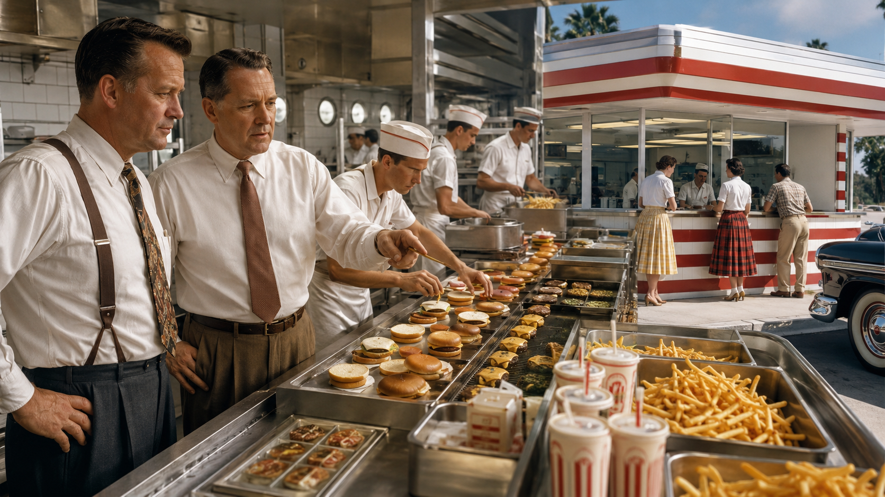
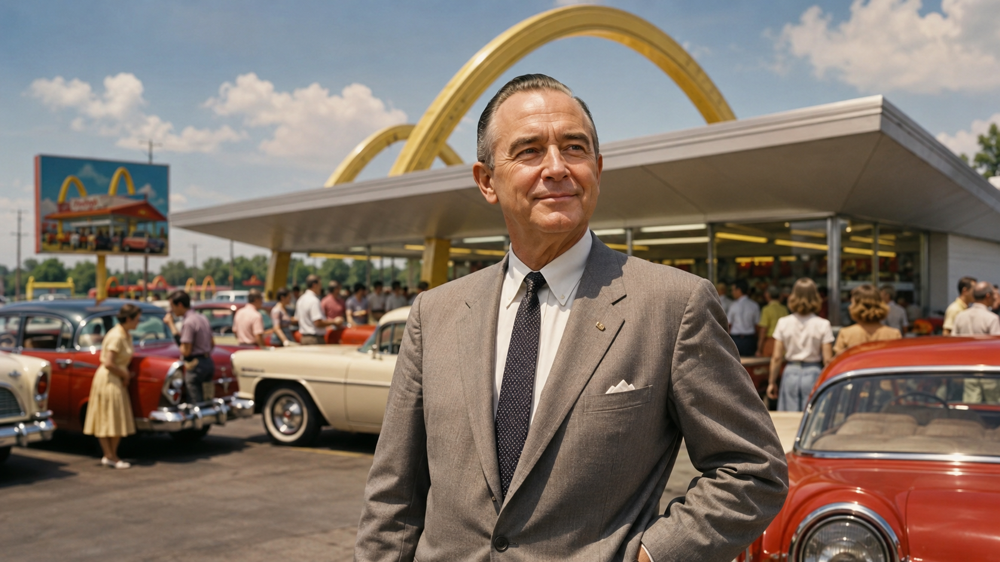
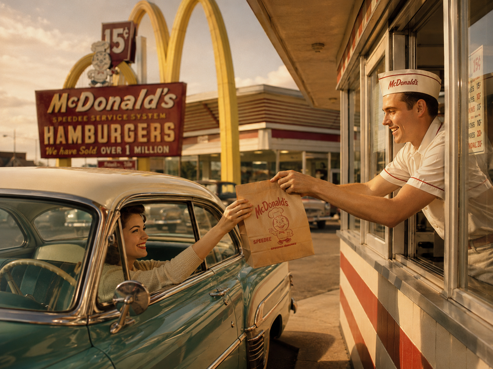
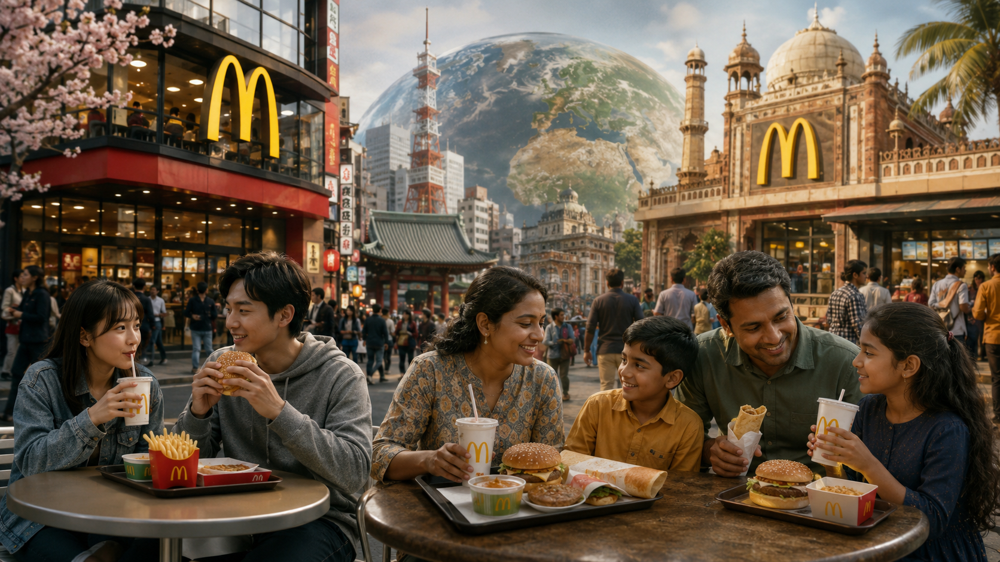
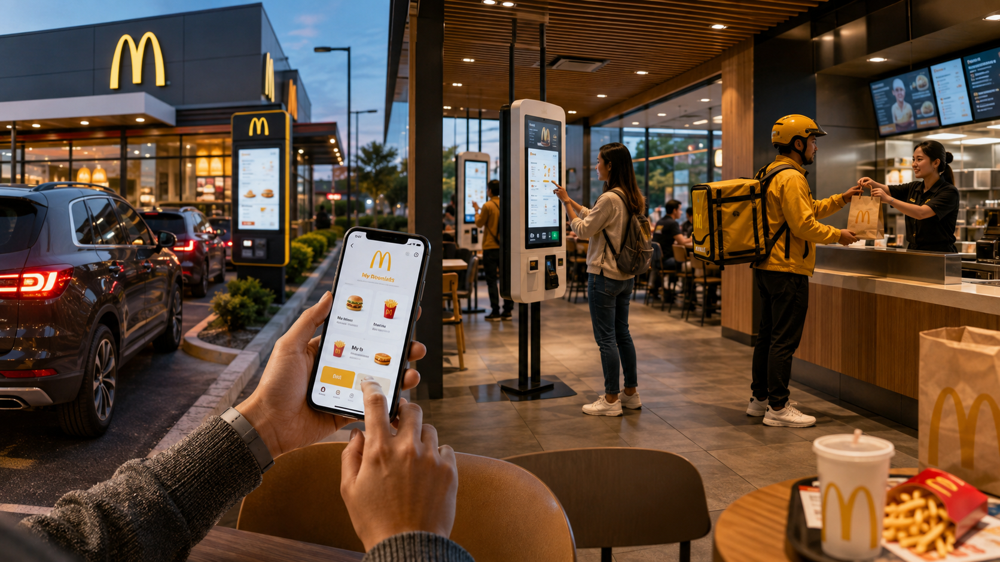

1. Before the Golden Arches: The McDonald Brothers’ First Business
Long before McDonald’s became synonymous with fast food, there were no Golden Arches, no Big Macs, no drive-thru windows and no vast network of franchises stretching across the world. There were simply two brothers trying to build a profitable restaurant in Southern California.
Richard “Dick” McDonald and Maurice “Mac” McDonald had moved west from New England in search of opportunities they believed would be harder to find back home. Their first ambitions were not in restaurants at all. They tried to establish themselves in the movie business, but success proved elusive. Eventually, the brothers turned their attention toward a very different industry—food service—at a moment when Southern California was becoming one of the most automobile-centered regions in the United States.
That environment was ideal for the rapidly growing drive-in restaurant. Instead of customers entering a traditional dining room, motorists could pull into a parking space and eat without leaving their cars. Employees known as carhops carried orders directly to customers, while large menus offered everything from sandwiches and drinks to full meals. The model suited a society increasingly organized around automobile ownership, suburban growth and roadside commerce.
In 1940, the brothers opened McDonald’s Bar-B-Q at Fourteenth and E Streets in San Bernardino, California. Despite the familiar name, the restaurant looked very different from the McDonald’s that would later conquer the world. It was a conventional drive-in with carhop service and a broad menu, and one of its specialties was slow-cooked barbecue prepared in a pit using hickory chips. There was no indoor dining room, and most customers were served in their cars.
The business worked.
McDonald’s Bar-B-Q became successful enough that annual sales eventually exceeded $200,000—an impressive operation for the period. Yet the brothers were not satisfied simply because the restaurant was making money. They began studying what customers were actually buying, where their costs were coming from and which parts of the operation were unnecessarily complicated. That habit of examining the business as a system would become one of the most important elements in the entire McDonald’s story.
One discovery stood out above everything else.
Although barbecue was supposed to be a central feature of the restaurant, hamburgers accounted for roughly 80 percent of its sales. Customers were effectively telling the brothers what business they should really be in. Instead of ignoring that information and protecting the restaurant they had already built, Dick and Mac began questioning almost every part of it.
There were other problems as well. Traditional drive-ins required a relatively large workforce. Carhops had to move constantly between the kitchen and parked automobiles. Plates, glasses and silverware needed to be collected, washed and replaced when broken or stolen. A large menu meant maintaining more ingredients and preparing more types of food. Service could be slow, orders could vary, and customers often occupied parking spaces for considerable periods of time.
The brothers began to see something that would later become fundamental to modern business thinking: a successful company can still contain enormous inefficiencies.
Rather than asking how they could attract more customers to the existing restaurant, they began asking a more powerful question: what would happen if they redesigned the entire operation around the products customers wanted most?
Their answer was extreme.
In 1948, at a time when their restaurant was already profitable, Dick and Mac McDonald temporarily shut it down and dismantled much of the business model that had made it successful. The carhops would disappear. The menu would be drastically reduced. Reusable dishes and traditional tableware would be replaced by disposable packaging. Customers would collect their own food from a service window.
Most importantly, the kitchen itself would be reorganized around speed, repetition and specialization.
When the restaurant reopened later that year, its menu had been reduced to only nine items, centered on a 15-cent hamburger. The brothers had effectively transformed a conventional drive-in into something far more systematic.
They were no longer simply running a restaurant.
They were beginning to design a machine for selling hamburgers.
That machine would soon have a name: the Speedee Service System.
And it would change the restaurant industry forever.
2. The Speedee Service System: Turning a Restaurant into an Assembly Line
When the McDonald brothers reopened their restaurant in 1948, they were attempting something far more ambitious than simply serving hamburgers faster. They had reconsidered almost every traditional assumption about how a restaurant was supposed to operate and rebuilt the business around a single objective: eliminate unnecessary time, movement and cost.
The result became known as the Speedee Service System, and it would become one of the foundations of the modern fast-food industry.
Traditional restaurants depended heavily on individual employees performing multiple tasks. A cook might prepare different dishes depending on the order, waiters or carhops transported food to customers, dishes had to be collected and cleaned, and customers often waited while meals were prepared specifically for them. The McDonald brothers approached the problem differently.
Instead of treating each meal as an individual order produced from beginning to end, they began treating food preparation as a production process.
The principle resembled an industrial assembly line. Rather than having one employee prepare an entire order, workers were assigned specialized, repetitive tasks. One person could concentrate on grilling hamburger patties, another could prepare buns, another could add condiments, while others handled french fries, drinks or final assembly. Each station had a clearly defined purpose, and the kitchen was organized so that food could move through the process with as little wasted motion as possible.
It was a remarkably different way of thinking about restaurant work.
The brothers were effectively applying principles of mass production to food.
But specialization alone was not enough. To make the system truly efficient, the entire restaurant had to be designed around it.
Dick and Mac examined how employees moved through the kitchen and considered where every major piece of equipment should be located. The objective was not simply to fit grills, fryers and preparation areas into the available space; it was to arrange them so employees could perform their tasks repeatedly without constantly crossing paths, walking unnecessary distances or interrupting one another.
Accounts of the development of the system describe the brothers experimenting with full-scale kitchen layouts before finalizing their design. The famous story—later dramatized in The Founder—involves outlining kitchen equipment with chalk on a tennis court and having workers move through simulated production routines while the layout was repeatedly adjusted. Although the scene became especially well known through the film, research used in reconstructing the early restaurants supports the broader historical point: the brothers deliberately engineered their kitchen around the movements required to prepare food efficiently.
This attention to movement illustrates one of the most important ideas behind the McDonald brothers’ business philosophy.
Speed was designed into the system.
It was not supposed to depend on an unusually talented cook working faster than everyone else. The process itself was structured so that ordinary employees performing simple, specialized tasks could produce food quickly and consistently.
The menu was equally important.
By eliminating most of the dozens of items previously offered by McDonald’s Bar-B-Q, the brothers dramatically simplified inventory, preparation and employee training. Instead of maintaining ingredients and equipment for a large variety of meals, they could concentrate resources on a handful of products customers purchased most frequently.
The streamlined restaurant initially revolved around a menu of just nine items, including hamburgers, cheeseburgers, drinks, milk, coffee, potato chips and pie. The hamburger cost just 15 cents.
A smaller menu produced several advantages simultaneously.
Fewer ingredients meant easier inventory management and less operational complexity. Employees could repeat the same tasks constantly and become extremely efficient at them. Equipment could be selected and positioned for specific jobs. Food could be prepared in larger quantities based on predictable demand rather than waiting for every customer to place a unique order.
And because the brothers had eliminated carhop service, customers now approached the restaurant themselves and collected their food at the service window.
Disposable packaging replaced much of the traditional plates, glasses and silverware. That eliminated another entire layer of work: collecting dishes, washing them, storing them and replacing those that were broken or disappeared.
Each individual change appeared relatively simple.
Together, however, they radically altered the economics of the restaurant.
The Speedee Service System allowed McDonald’s to reduce labor requirements, simplify training, accelerate customer turnover and sell inexpensive food while depending on large sales volumes. Richard McDonald would later summarize the philosophy behind the concept as one based on speed, low prices and volume.
That combination is crucial to understanding the future McDonald’s empire.
A 15-cent hamburger did not need to generate an enormous profit by itself if the restaurant could sell enormous numbers of them through an operation engineered to process customers quickly. Instead of maximizing the amount earned from each customer, the model could succeed by serving more customers with extraordinary efficiency.
In modern business language, the brothers had created a system built for high-volume operations.
There was also another advantage that would eventually become even more important: consistency.
If employees followed the same procedures, used the same quantities and performed the same specialized tasks repeatedly, the final product became less dependent on individual judgment. A hamburger was not supposed to change dramatically depending on who happened to be working that day.
This principle would later become essential to McDonald’s global identity.
Customers could begin to expect a standardized experience.
But when the redesigned restaurant first opened, success was not immediate.
The brothers had removed many of the features customers associated with a traditional drive-in. There were no carhops walking to automobiles. Customers had to leave their cars and approach the service window themselves. The familiar plates and silverware were gone. The menu was dramatically smaller.
Some people simply did not understand the new concept.
According to historical accounts, the reopened restaurant initially struggled to attract customers accustomed to conventional drive-in service. Former carhops reportedly mocked the brothers’ experiment. But gradually, customers began recognizing the advantages: the food was inexpensive, it arrived extremely quickly, and the simplified environment appealed increasingly to families and people looking for a fast meal rather than a long dining experience.
The system began to work.
And once it did, something significant had happened.
Dick and Mac McDonald had solved a problem far larger than how to make a hamburger quickly. They had developed a method for turning restaurant service into a repeatable operational process.
That distinction matters.
A successful restaurant can depend heavily on its location, its chef or the personality of its owner. A successful system can potentially be reproduced.
The brothers had created something that could, at least in theory, be copied somewhere else: the same limited menu, the same specialized workstations, the same preparation procedures and the same focus on speed and consistency.
They had created the foundations of a scalable business model before scalability became the defining characteristic of McDonald’s.
But there was still a problem.
Dick and Mac had discovered how to build an extraordinarily efficient restaurant.
They had not yet discovered how to turn that restaurant into an empire.
Someone else eventually would.
And in 1954, that person drove into San Bernardino wondering why one small hamburger restaurant needed so many milkshake machines.
3. Ray Kroc Arrives: The Man Who Saw a National Opportunity
By 1954, the McDonald brothers had already accomplished something remarkable. Their San Bernardino restaurant had become profitable, their Speedee Service System had demonstrated that food could be prepared with extraordinary efficiency, and they had even begun experimenting with franchising. According to McDonald’s own historical records, Dick and Mac sold 14 franchises before Ray Kroc became involved, with 10 of those eventually becoming operating restaurants in addition to the original San Bernardino location. The concept was therefore no longer confined to a single restaurant—but its expansion remained relatively limited.
Then Ray Kroc entered the story.
Kroc was not a restaurant owner, a chef or a young entrepreneur searching for his first opportunity. He was 52 years old and had spent much of his working life as a salesman. A native of the Chicago area, he had worked as a musician and sold paper cups before becoming involved with a machine called the Multimixer, which could prepare several milkshakes simultaneously. By 1939, Kroc had become its exclusive distributor, traveling extensively to sell the machines to restaurants across the United States.
That business eventually led him to an unusual customer in California.
The McDonald brothers’ hamburger restaurant was operating eight Multimixers at the same time. Since each machine could prepare multiple milkshakes, the size of the order immediately suggested something extraordinary: this restaurant had to be serving an enormous number of customers. Kroc wanted to understand why one relatively small hamburger stand required so much milkshake capacity, so in 1954 he traveled west to San Bernardino to see the operation for himself.
What he found was unlike the conventional restaurants he knew.
Customers were being served at remarkable speed. The menu was limited, employees performed specialized tasks, and the kitchen operated with the efficiency that Dick and Mac had spent years developing. Instead of waiting for individual meals to be prepared through a traditional restaurant process, customers could receive hamburgers, fries and milkshakes rapidly and at low prices. The limited menu also made it easier to maintain consistency and concentrate on a relatively small number of products. McDonald’s later described Kroc as being fascinated by how many people could be served so quickly.
For Kroc, however, the most important thing was not simply that the restaurant was busy.
It was that the system appeared repeatable.
That distinction would define the next stage of McDonald’s history. Dick and Mac had spent years improving one extraordinarily efficient restaurant concept. Kroc looked at essentially the same operation and imagined hundreds—and eventually thousands—of versions of it.
His original motivation even had a direct connection to the business he already understood. More McDonald’s restaurants would mean more customers for his Multimixers. McDonald’s Canada’s historical account states that Kroc proposed opening multiple restaurants, imagining that each one could potentially use eight of his milkshake machines. When the brothers questioned who would actually open those restaurants, Kroc proposed himself.
The idea was not entirely new to Dick and Mac. They had already allowed other operators to reproduce the McDonald’s concept, and their restaurant design—complete with the distinctive red-and-white building and large yellow arches—had begun appearing at franchised locations during the early 1950s. What they had not built was an aggressive national organization capable of systematically locating franchisees, supervising expansion and enforcing the operating standards necessary to make dozens or hundreds of restaurants function as one recognizable chain.
Kroc believed that was the real opportunity.
In 1954, he became the McDonald brothers’ franchising agent, gaining the opportunity to expand the concept far beyond Southern California. Smithsonian’s historical account describes Kroc as obtaining the rights to franchise McDonald’s across the country that year, marking the beginning of the expansion model that would eventually transform the restaurant into a national brand.
The partnership brought together two very different strengths.
The McDonald brothers had developed the operating system: the limited menu, specialized kitchen, rapid service, standardized preparation and relentless focus on efficiency.
Kroc brought something different: an obsession with expansion.
For him, the great value of McDonald’s was not simply the profits that one restaurant could generate. It was the possibility of reproducing the same economics repeatedly. If the system worked in San Bernardino, perhaps it could work in Chicago. If it worked in Chicago, perhaps it could work in dozens of American cities. And if every restaurant followed essentially the same procedures, customers could learn to trust the name regardless of who owned the individual location.
This is where McDonald’s began moving from an excellent restaurant concept toward something much larger: a business platform.
The difference is fundamental. A traditional restaurant grows primarily by attracting more customers to one location or by opening additional locations that may each develop their own personality. A franchise system can grow by allowing independent operators to invest their own capital while using an established brand, operating procedures and business model.
But that model only works if the brand remains consistent.
Kroc understood that expansion without control could destroy the very advantages that made McDonald’s valuable. A customer visiting one location could not receive an excellent hamburger while another McDonald’s several hundred miles away served something completely different under the same name. The restaurants needed to reproduce not only the logo but the experience.
This would become one of Kroc’s defining principles.
McDonald’s would ultimately pursue a system in which the same basic standards of preparation, cleanliness, service and operations could be reproduced from restaurant to restaurant. Smithsonian later summarized the philosophy behind McDonald’s expansion as an obsession with standardization and repetition rather than culinary individuality.
That idea may sound ordinary today because global restaurant chains have made standardized experiences familiar. In the 1950s, however, creating a geographically dispersed network of independently operated restaurants that could behave like parts of one coordinated organization was a formidable business challenge.
Kroc needed franchisees willing to invest.
He needed suppliers capable of delivering consistent ingredients.
He needed procedures that could be taught to people who had never worked in San Bernardino.
He needed buildings that customers could recognize from the road.
And above all, he needed a restaurant that could prove the entire concept worked far away from the McDonald brothers’ original operation.
That test came in Illinois.
On April 15, 1955, Ray Kroc opened his first McDonald’s restaurant in Des Plaines, Illinois, east of the Mississippi River. The restaurant adopted the eye-catching red-and-white design with the Golden Arches that had been developed for the McDonald brothers’ earlier franchised locations. According to McDonald’s corporate history, sales on the first day totaled $366.12.
The Des Plaines restaurant was not the first McDonald’s ever built, despite the way the story was sometimes presented later. Dick and Mac had founded McDonald’s years earlier and had already franchised several locations before Kroc entered the company. What made Des Plaines historically important was something different: it was the first restaurant opened as part of Kroc’s new expansion organization, McDonald’s System, Inc., the corporate predecessor of what would eventually become McDonald’s Corporation.
The distinction matters because the McDonald’s story is really the result of two entrepreneurial breakthroughs.
The brothers invented the system.
Kroc built the organization capable of spreading it.
And once the first Illinois restaurant proved that the McDonald’s formula could operate hundreds of miles from San Bernardino, Kroc began pursuing expansion with an ambition far greater than anything the brothers had previously attempted.
His eventual vision was enormous. McDonald’s own historical archive records that Kroc imagined 1,000 McDonald’s restaurants in the United States alone—a number that must have seemed extraordinary when the chain still consisted of only a handful of locations.
But opening restaurants would turn out to be only part of the challenge.
If McDonald’s was going to grow rapidly without collapsing under the weight of its own expansion, Kroc needed to solve a much more complicated problem: how do you allow hundreds of different entrepreneurs to operate restaurants while making every one of them behave as if they belong to the same company?
The answer would become the heart of the McDonald’s franchise machine.

4. Building the Franchise Machine
Opening one successful McDonald’s in Illinois proved that the system could travel. Building hundreds of them would require something far more difficult.
Ray Kroc did not simply need restaurant owners willing to use the McDonald’s name. He needed people willing to operate within a tightly controlled system in which individual freedom was deliberately limited for the sake of consistency.
That became one of the defining ideas behind McDonald’s growth.
Franchising itself was not new. Companies had already used variations of the model to expand without directly owning every location. The basic arrangement was straightforward: an entrepreneur invested money to operate a business using another company’s brand and methods, while the parent organization received fees or a share of revenue.
The challenge was control.
If franchisees changed recipes, bought cheaper ingredients, ignored cleanliness standards or altered operating procedures, McDonald’s could rapidly become a collection of unrelated hamburger restaurants sharing the same sign. The faster the chain expanded, the greater that risk became.
Kroc therefore pursued something more demanding than simply licensing a name.
He wanted to franchise a system.
McDonald’s would determine how food should be prepared, how restaurants should operate and what customers should expect when they walked up to the counter. Franchisees could own and manage their businesses, but the essential McDonald’s experience had to remain recognizable from location to location.
This philosophy eventually became closely associated with four principles: Quality, Service, Cleanliness and Value — QSC&V. McDonald’s continues to identify these principles as central to Kroc’s original vision and to the way the franchise system operates.
The concept sounds simple, but enforcing it across a growing network required constant supervision.
A hamburger could not be noticeably different because one franchisee preferred a thicker patty. French fries could not be prepared according to whatever method an individual manager found convenient. Restaurants could not allow service standards or cleanliness to vary dramatically without damaging the reputation of every other McDonald’s location.
The brand was becoming a shared asset.
That meant the actions of one operator could affect everyone else.
Kroc became deeply involved in creating an organization capable of monitoring restaurants and teaching operators how the McDonald’s system was supposed to work. But he was not alone. One of the most important figures in developing those operating standards was Fred Turner, who joined McDonald’s in 1956 as a counterman at the Des Plaines restaurant. He quickly moved into operations and eventually helped define the quality, service and cleanliness standards that would become fundamental to the company.
Turner’s rise illustrates something important about McDonald’s.
The company was not simply selling franchises. It was gradually creating an enormous body of knowledge about how a McDonald’s restaurant should function.
Every task could be examined.
How long should food cook?
How should ingredients be handled?
How should employees move through the kitchen?
How should equipment be cleaned?
How should customers be served?
What procedures produced the most consistent results?
The more McDonald’s learned, the more those lessons could be transformed into standards and taught to the next restaurant.
That created a powerful feedback loop.
Each new location was not forced to invent its own operating system from scratch. Franchisees received a model that had already been tested elsewhere, while McDonald’s gained additional restaurants from which it could continue learning and refining the system.
In business terms, the company was converting experience into procedures.
That was a major reason the franchise model could scale.
It also changed the relationship between McDonald’s and its franchisees. The operators were independent entrepreneurs with their own money at risk, which gave them a strong incentive to make their restaurants profitable. But they were simultaneously part of a larger organization whose rules protected the value of the McDonald’s brand.
The combination was powerful: local ownership with centralized standards.
Kroc believed strongly in owner-operators who were personally invested in their restaurants rather than simply hiring distant managers to run them. The franchisee had the motivation of an entrepreneur, while McDonald’s supplied the brand, procedures and accumulated knowledge of the wider system.
Over time, this relationship would become one of the three pillars McDonald’s frequently describes as its “System”: the company, its franchisees and its suppliers. Modern McDonald’s still presents those groups as interconnected parts of the same organization rather than completely separate businesses.
Suppliers were particularly important.
Standardization inside a restaurant meant little if the raw materials arriving at different locations were inconsistent. As the chain expanded, McDonald’s needed suppliers capable of producing ingredients and equipment according to increasingly precise requirements and delivering them reliably across larger geographical areas.
That meant scale was beginning to reshape the entire business.
More restaurants created larger purchasing volumes. Larger volumes made it possible to develop deeper relationships with suppliers. More reliable suppliers helped restaurants maintain consistency. And greater consistency strengthened the McDonald’s brand, making additional expansion easier.
The system reinforced itself.
But Kroc also understood that procedures could not depend entirely on experienced executives visiting every new restaurant. McDonald’s needed a way to teach its methods systematically.
In 1961, the company took an unusual step for a hamburger chain.
It created a school.
Hamburger University opened in the basement of a McDonald’s restaurant in Elk Grove Village, Illinois. Its purpose was not to teach haute cuisine or develop celebrity chefs. It was designed to teach the McDonald’s operating system. Graduates were famously awarded degrees in “Hamburgerology.”
Behind the playful terminology was a serious business idea.
McDonald’s was treating restaurant management as something that could be studied, documented, taught and reproduced.
This was essential for a company whose competitive advantage increasingly depended on repetition.
A growing organization normally faces a difficult problem: knowledge often remains trapped inside the heads of experienced employees. When those people leave or when the company expands into new locations, that knowledge can disappear.
McDonald’s attempted to solve that problem by institutionalizing it.
Instead of relying solely on tradition or personal instruction, the company increasingly converted its operating philosophy into training. New operators and managers could learn the same basic principles even if they had never met the McDonald brothers or worked alongside Kroc.
The restaurant was becoming less dependent on specific individuals.
That is one of the most important steps in building a scalable company.
A business that only works when its founder is physically present has a natural limit. A business whose methods can be taught to thousands of people can expand far beyond its founder’s direct control.
By the mid-1960s, the results were becoming visible. When McDonald’s held its first Worldwide Convention for owner-operators in 1965, the company had already reached 738 restaurants across the United States.
Only a decade had passed since Kroc opened his Des Plaines restaurant.
The extraordinary growth was not simply the result of Americans suddenly wanting more hamburgers. McDonald’s had created an organizational structure capable of reproducing restaurants at a remarkable pace while attempting to preserve a common identity.
The franchise model supplied entrepreneurs.
Training supplied knowledge.
Standards supplied consistency.
Suppliers supplied scale.
And the McDonald’s name connected them all.
But despite the accelerating growth, there was a serious weakness hidden inside the company’s early economics.
McDonald’s was opening restaurants, yet Kroc’s organization was not generating enough money to finance the expansion comfortably. The franchise system was growing faster than the financial structure supporting it.
The solution would come from a man named Harry Sonneborn and from an idea that would fundamentally change the economics of McDonald’s.
McDonald’s would no longer make money only from hamburgers and franchise fees.
It would begin making money from the land beneath the restaurants.
5. The Real Estate Strategy That Changed McDonald’s
McDonald’s had discovered how to reproduce restaurants, but rapid expansion created a financial contradiction.
Every new franchise strengthened the brand and increased the reach of the system, yet Ray Kroc’s organization was not necessarily receiving enough money quickly enough to support the pace at which he wanted to grow. Franchising allowed independent entrepreneurs to provide much of the capital required to operate restaurants, but McDonald’s itself still needed a stronger financial foundation.
The person who helped provide it was Harry J. Sonneborn.
Sonneborn had previously worked in finance at the restaurant chain Tastee-Freez before becoming involved with Kroc during the formative years of McDonald’s expansion. His contribution would eventually become almost as important to the company’s business architecture as the Speedee Service System had been to its restaurant operations. Rather than concentrating only on the hamburgers being sold inside each location, Sonneborn focused on something more permanent: the property beneath it. Historical accounts credit him with developing the strategy through which McDonald’s would acquire or control restaurant sites and then lease them to franchisees.
The idea solved several problems at once.
Instead of functioning merely as a company that licensed its name and collected franchise royalties, McDonald’s could place itself between the restaurant operator and the real estate. The company could acquire a property or secure a long-term lease on it, establish a McDonald’s restaurant there, and then lease the location to the franchisee operating the business.
This created an additional stream of income.
The franchisee was no longer paying McDonald’s only for access to the brand and operating system. Under the conventional model that developed, rent became another important part of the economic relationship between the operator and the company.
But the real importance of the strategy went far beyond collecting rent.
It gave McDonald’s control.
A franchise agreement could tell an operator how a restaurant should function, but control over the physical location created another powerful mechanism for enforcing standards. A franchisee who operated on property controlled by McDonald’s was more deeply connected to the system than an independent restaurant owner who simply licensed a logo while owning the building beneath it.
The property and the franchise became intertwined.
That alignment helped Kroc confront one of the greatest risks of rapid franchising: losing control over operators as the chain grew.
McDonald’s did not want hundreds of entrepreneurs independently deciding what the brand should become. The company wanted entrepreneurs who would invest their own money and energy while operating inside a carefully defined system. Control of key restaurant sites strengthened McDonald’s ability to protect that system.
The financial advantages were equally important.
Restaurant royalties rise and fall with restaurant sales. Rent associated with a strategically valuable site could provide another source of recurring income, while control of long-term locations gave McDonald’s assets and contractual rights that extended beyond the sale of individual hamburgers.
To manage this strategy, Franchise Realty Corporation was created in 1956. Its purpose was to handle the real estate arrangements connected with McDonald’s growing franchise network, helping secure locations and placing franchisees into sites controlled through the system.
This was a profound shift in the economics of McDonald’s.
Consider the difference between the two models.
In a simple franchise arrangement, the company earns money primarily when an operator buys a franchise and generates sales. If the franchise agreement ends, much of the company’s relationship with that particular location may end with it.
In the McDonald’s conventional model, the company could also retain an interest in the restaurant site itself. The operator might change, but McDonald’s control over the location could remain.
That made the physical network of restaurants strategically valuable in its own right.
It also transformed site selection into a central corporate capability.
A restaurant could have excellent food and efficient operations but still fail if it was placed somewhere with insufficient traffic, poor accessibility or limited visibility. As McDonald’s expanded, identifying locations with strong commercial potential became part of the company’s competitive advantage.
The question was no longer merely:
“Who wants to open a McDonald’s?”
It also became:
“Where should the next McDonald’s be?”
Traffic patterns, suburban growth, road access, population development and commercial activity all became increasingly important to expansion. A strong location could support a restaurant for decades, making the decision about where to place a McDonald’s almost as important as the operating system inside it.
The strategy became particularly powerful because it connected several different interests.
McDonald’s wanted successful restaurants because successful restaurants produced royalties and strengthened the brand.
Franchisees wanted successful restaurants because their own money was invested in the business.
Property owners and financial institutions could participate in a rapidly expanding national chain.
And the real estate structure gave McDonald’s another layer of recurring revenue while helping it maintain control over locations.
The interests were not always identical, and conflicts between franchisees and the corporation would emerge throughout McDonald’s history. But the underlying structure created an unusual combination of entrepreneurial ownership and centralized economic control.
That structure survives in recognizable form today.
Under McDonald’s modern conventional franchise arrangement, the company generally owns the property or secures a long-term lease on the land and building, while the franchisee invests in items such as equipment, signs, seating and décor. The franchisee then contributes revenue to McDonald’s through rent, royalties and other applicable fees. McDonald’s itself states that controlling the real estate, together with franchisee investment, is an important part of the performance of its system.
The company’s financial filings also show why the arrangement remains so significant. Revenue from conventional franchised restaurants includes both royalties and rent, with rental arrangements incorporating minimum payments and, in many cases, amounts tied to restaurant sales.
This is the historical reality behind one of the most repeated claims about McDonald’s: that it is secretly a real estate company rather than a hamburger company.
The statement contains an important insight, but taken literally it is misleading.
McDonald’s remains fundamentally dependent on restaurants selling food. If customers stop buying hamburgers, fries, drinks and other products, franchise sales decline, royalties suffer, franchisees struggle and the economic value of restaurant locations is affected. The food business and the property strategy are not separate machines.
They reinforce one another.
The restaurants create demand for the locations.
The locations help McDonald’s control the restaurants.
The franchisees provide entrepreneurial capital and local management.
The corporation provides the brand, operating system, property structure and scale.
That interconnected model is far more interesting than the popular claim that McDonald’s simply happens to be a landlord disguised as a restaurant chain.
Even today, McDonald’s describes itself primarily as a franchisor and operator of restaurants, while explaining that its ownership or long-term control of real estate is one of the defining features of its conventional franchise structure.
In the late 1950s, however, the importance of Sonneborn’s idea was more immediate.
Kroc needed a way to build a company capable of expanding rapidly without depending entirely on the small royalty income generated by a young franchise network. Real estate provided a more substantial economic structure and helped make expansion increasingly attractive to lenders and investors.
As additional restaurants opened, McDonald’s accumulated something more valuable than individual sales transactions.
It accumulated a network.
Every successful restaurant increased recognition of the brand. Greater recognition made new franchises more attractive. New franchises increased purchasing power and strengthened supplier relationships. More locations created greater advertising reach. And control of restaurant sites added another layer of economic stability to the system.
McDonald’s was becoming a business in which each new unit made the wider organization stronger.
Sonneborn himself would rise rapidly within that organization, eventually becoming McDonald’s first president and chief executive during the period in which the chain transformed from an ambitious franchise operation into a major corporation.
His approach also demonstrated a broader business principle.
The most valuable part of a company is not always the product customers can see.
Customers saw hamburgers, fries and milkshakes.
Behind them were standardized procedures, franchise contracts, training systems, supplier relationships, trademarks—and increasingly, strategically controlled real estate.
The hamburger generated the transaction.
The system captured the value.
And with its financial architecture becoming stronger, Ray Kroc was approaching the moment when he would no longer be satisfied merely expanding McDonald’s on behalf of Dick and Mac McDonald.
He wanted control of the entire company.
In 1961, the relationship between Kroc and the brothers would reach its decisive breaking point.
McDonald’s was about to change owners.
6. The $2.7 Million Buyout: Kroc Takes Control
By the beginning of the 1960s, McDonald’s had reached an uncomfortable point in its evolution.
The business was expanding rapidly. Ray Kroc had spent years recruiting franchisees, strengthening operating standards, developing supplier relationships and building an organization capable of reproducing the McDonald’s system across the United States. Yet the name, concept and ultimate authority over the business still originated with Richard and Maurice McDonald in California.
The arrangement had worked when McDonald’s was a relatively small franchise operation.
It was becoming increasingly difficult as Kroc’s ambitions grew.
Kroc and the McDonald brothers did not fundamentally disagree about whether McDonald’s was successful. Their disagreement was increasingly about what success should look like. Dick and Mac had already achieved financial security and had demonstrated that their restaurant system worked. They were comparatively cautious about expansion and protective of the concept they had created. Kroc, by contrast, saw almost no reason to stop. He believed McDonald’s could become a national institution and wanted the freedom to move faster, modify the system when necessary and pursue opportunities without repeatedly seeking approval from California.
By 1961, there were already roughly 300 McDonald’s restaurants in operation. What had begun as one San Bernardino drive-in had become a substantial chain, but Kroc believed the organization was still operating far below its potential.
The relationship between the partners had become increasingly strained.
For Kroc, every restriction imposed by the brothers could feel like an obstacle to expansion. For Dick and Mac, Kroc’s relentless growth represented a business philosophy very different from the one under which they had originally built McDonald’s.
Eventually, there was an obvious solution.
One side would have to buy out the other.
In 1961, Kroc asked the brothers what it would take for them to sell their interest in McDonald’s. The price they ultimately agreed upon was $2.7 million. McDonald’s corporate history confirms that the company acquired the rights to the brothers’ business for that amount that year.
In the early 1960s, $2.7 million represented an enormous sum for an expanding restaurant company that was still developing its financial structure. Kroc did not simply have that amount sitting in a bank account. Financing the acquisition was difficult, particularly because McDonald’s was already carrying obligations associated with its rapid expansion.
Harry Sonneborn and the financial structure developed around the company helped make the transaction possible. Kroc secured the financing necessary to complete the purchase, and with the deal, the fundamental power structure of McDonald’s changed.
The brothers who had invented the restaurant system were leaving the company that carried their name.
Ray Kroc was taking control.
The transaction transferred the McDonald’s name and the rights necessary for Kroc’s organization to continue developing the chain. McDonald’s System, Inc.—the company Kroc had created in 1955 and which McDonald’s today identifies as a predecessor of McDonald’s Corporation—was no longer operating merely as the brothers’ national franchising organization. Kroc now controlled the business he intended to transform into something far larger.
There was, however, one important exception.
Dick and Mac retained their original San Bernardino restaurant.
Because the McDonald’s name was part of the rights they had sold, they could no longer operate the location under the family name. The restaurant was consequently renamed The Big M. Historical accounts agree that the brothers kept the original operation after the sale, while Kroc controlled the McDonald’s brand and the expanding chain.
The situation produced one of the most dramatic symbols in the entire story.
The men who had created McDonald’s still owned the restaurant where the concept had been born, but they could no longer call it McDonald’s.
Meanwhile, the man who had joined them more than a decade after they first entered the restaurant business now controlled their surname as one of the most valuable assets of the expanding company.
Kroc later opened a McDonald’s restaurant near the brothers’ renamed operation. The Big M eventually went out of business, and the original San Bernardino restaurant was later demolished. Today, the site is associated with a privately operated museum dedicated to the early history of McDonald’s and Route 66.
That part of the story has often been presented as the final act of a ruthless campaign by Kroc to destroy the brothers who had created the concept. The reality deserves more careful treatment.
The relationship unquestionably deteriorated, and Kroc himself later described significant frustration with Dick and Mac. But some of the most dramatic details commonly associated with the breakup rely heavily on later recollections, family accounts or popular retellings rather than surviving contractual evidence.
The most famous example concerns an alleged one-percent royalty.
A widely repeated version of the story claims that, as part of the 1961 negotiations, Kroc orally promised the brothers a continuing one-percent share of McDonald’s revenues but that the agreement was sealed only with a handshake and never included in the written contract. Under this version, the brothers subsequently received nothing from the enormous future growth of the company.
The claim became particularly famous after being dramatized in the 2016 film The Founder.
But it should not be presented as an unquestioned historical fact.
There is no known written provision establishing such a perpetual royalty in the final sale agreement, and accounts supporting the handshake arrangement rely largely on later testimony connected to the McDonald family. The safest historical conclusion is therefore that the alleged royalty remains disputed rather than definitively documented.
What is not disputed is the extraordinary consequence of the deal that was actually completed.
Dick and Mac McDonald received $2.7 million and exited the expanding corporation.
Kroc received control of the McDonald’s system.
From a purely financial perspective, later events make the purchase price appear astonishingly small compared with the value McDonald’s would eventually achieve. But judging the brothers’ decision only through hindsight ignores the world in which they made it. In 1961, nobody could know with certainty that McDonald’s would become one of the largest restaurant organizations in history.
The brothers had already transformed their lives through the business. They had created an extraordinarily successful restaurant system, earned substantial money and now had an opportunity to convert their remaining interest into a multimillion-dollar payment.
Kroc was accepting a different kind of risk.
He was committing himself financially to the belief that McDonald’s future would be worth dramatically more than the price he was paying for control.
That difference reveals something important about entrepreneurship.
Dick and Mac were exceptional innovators. They recognized inefficiency in the traditional drive-in restaurant and redesigned the entire production process around speed, simplicity and volume.
Kroc was an exceptional scaler. He looked at what the brothers had created and believed the value of the system would increase enormously if it could be reproduced thousands of times.
Those talents are not the same.
Inventing a successful business model does not automatically mean someone wants—or is able—to build a giant corporation around it. Likewise, scaling a business does not mean the person responsible invented its fundamental idea.
McDonald’s required both achievements.
Without Dick and Mac, there was no Speedee Service System, no radically simplified menu and no restaurant concept for Kroc to discover.
Without Kroc, there is little reason to believe the McDonald brothers’ relatively modest network would have developed into the global organization that followed.
The 1961 purchase separated those two chapters.
Before the transaction, McDonald’s was still ultimately connected to the brothers who had invented it.
Afterward, it became Kroc’s company.
And Kroc wasted little time demonstrating what complete control could make possible.
McDonald’s had already sold its 100 millionth hamburger in 1958, even before the buyout. Now the company had a centralized leadership structure, a growing franchise network, standardized operating methods, a strengthening real-estate strategy and an increasingly recognizable national brand.
The next objective was no longer simply to prove that McDonald’s could expand.
That had already been demonstrated.
The challenge was to turn expansion into massive scale.
During the 1960s, McDonald’s would reach milestones that would have seemed almost absurd when Kroc first drove into San Bernardino. Hundreds of restaurants would become thousands. The menu would begin producing products capable of becoming cultural icons. Advertising would transform the Golden Arches into one of the most recognizable commercial symbols in America.
And eventually, McDonald’s would discover that the system the brothers had designed for Southern California could travel much farther than anyone had imagined.
The hamburger business was about to become a global business.

7. From Restaurant Chain to National Institution
Once Ray Kroc controlled McDonald’s, the question was no longer whether the company could expand. The question was how large it could become.
During the 1960s, McDonald’s moved through one of the most important transformations in its history. The company stopped looking like an unusually successful collection of hamburger restaurants and began developing the characteristics of a major corporation: hundreds of locations, national advertising, standardized architecture, recognizable symbols, new products, access to public capital and, eventually, expansion beyond the United States.
The scale of the change was remarkable.
By 1965, McDonald’s had approximately 700 restaurants. Just ten years earlier, Kroc had opened his first location in Des Plaines with first-day sales of $366.12. The franchise system had now reproduced the concept hundreds of times across the country, proving that the operating model was capable of expanding far beyond the handful of restaurants Kroc had encountered when he first visited the McDonald brothers.
But rapid expansion created another challenge.
A customer could encounter McDonald’s in an increasing number of cities, which meant the company needed to become recognizable before someone even entered the restaurant. The buildings, signs, advertising and menu could no longer function merely as local details. They had to communicate that every location belonged to the same national system.
The Golden Arches became central to that identity.
Their origins stretched back to the McDonald brothers, who wanted their early franchised restaurants to have an architecture that would attract attention from passing motorists. Architect Stanley Meston designed the distinctive red-and-white buildings beginning in the early 1950s, while Dick McDonald insisted on large arches incorporated into the structure. Yellow neon transformed those architectural elements into the “Golden Arches,” which eventually evolved from part of the building itself into one of the company’s defining visual symbols.
That transformation reveals another fundamental element of scale: recognition reduces uncertainty.
For a traveler arriving in an unfamiliar city, a recognizable McDonald’s sign could communicate something powerful before a single hamburger had been ordered. The customer already had an idea of what would be available, how quickly it would arrive and approximately what kind of experience to expect.
The brand therefore became a promise of consistency.
McDonald’s was not trying to make every restaurant memorable because it was unique. It was increasingly valuable because every restaurant felt familiar.
That principle ran directly against much of traditional restaurant culture. Restaurants historically differentiated themselves through individual chefs, regional specialties, distinctive interiors or personal service. McDonald’s built enormous value through the opposite strategy: reducing unnecessary variation so the experience could be repeated.
The same approach extended to the menu, although McDonald’s gradually learned that standardization did not mean refusing to innovate.
In fact, some of the company’s most important products emerged not from corporate headquarters but from franchisees confronting local business problems.
One of the earliest examples came from Lou Groen, a McDonald’s franchisee in Cincinnati, Ohio. Groen operated in a predominantly Roman Catholic neighborhood and noticed that his restaurant’s sales fell significantly on Fridays, when many Catholic customers abstained from eating meat.
His solution was a breaded fish sandwich.
Ray Kroc was initially skeptical. He preferred an alternative called the Hula Burger, consisting of grilled pineapple and cheese on a bun. McDonald’s tested the competing ideas, and according to the company’s historical account, the result was overwhelming: the test sold 350 Filet-O-Fish sandwiches compared with only six Hula Burgers. The Filet-O-Fish eventually became, in 1965, the first new item added to McDonald’s original national menu.
The episode illustrated something important about the growing organization.
McDonald’s imposed strict operating standards, but innovation did not necessarily have to originate at the top.
A franchisee could identify a problem, develop a solution and—if the idea worked—potentially influence the entire system.
That balance between centralized control and decentralized experimentation would become one of McDonald’s most valuable characteristics. Thousands of operators were following the same fundamental business model, but each was also exposed to local customer behavior. Successful ideas could be tested in one market before being adopted more widely.
The company was effectively turning its franchise network into a giant laboratory.
At the same time, McDonald’s was becoming financially large enough to take another major step.
On April 21, 1965, McDonald’s Corporation completed its initial public offering, making shares of the company available to public investors.
Going public changed McDonald’s in ways that extended far beyond the stock market.
The company now had access to a much larger pool of capital and became accountable to outside shareholders. Its growth could be measured not simply by the number of restaurants or hamburgers sold but by corporate financial performance. McDonald’s was moving decisively from entrepreneurial expansion into the world of large publicly traded corporations.
The IPO was also a powerful signal of how much the company had changed since Kroc’s arrival.
A decade earlier, he had been a milkshake-machine salesman fascinated by one unusual restaurant in California.
Now investors could buy ownership in the organization built around it.
Yet Kroc’s original ambitions were already being surpassed.
He had once envisioned 1,000 McDonald’s restaurants within the United States. Before the decade was over, McDonald’s would reach that milestone while simultaneously discovering that the concept did not need to remain American.
In 1967, McDonald’s began expanding internationally, opening restaurants in Canada and Puerto Rico. The Canadian expansion included a restaurant in Richmond, British Columbia, which McDonald’s identifies as the first McDonald’s restaurant opened outside the United States.
This was a much more important experiment than simply opening another location.
The entire logic of McDonald’s depended on reproducibility. The company had already demonstrated that the same system could work in California, Illinois, Ohio and hundreds of other American communities. International expansion raised a much larger question:
Could the system cross borders?
At first, moving into Canada did not require McDonald’s to confront the enormous cultural differences it would later face in Asia, Europe, the Middle East and other regions. But the significance was clear. McDonald’s was beginning to test whether its combination of standardized operations, franchising, branding and inexpensive food could become something larger than an American restaurant chain.
Meanwhile, another franchisee was developing a product that would become almost inseparable from the McDonald’s name.
Jim Delligatti, an owner-operator in the Pittsburgh area, believed his customers wanted a larger hamburger. In 1967, he introduced a double-decker sandwich with two beef patties, cheese, lettuce, pickles, onions and a distinctive sauce, served on a three-part sesame-seed bun.
It became the Big Mac.
After succeeding in Delligatti’s market, the sandwich was introduced nationally in 1968.
Once again, the innovation came from a franchisee.
And once again, McDonald’s possessed something that individual restaurants could not easily reproduce: a distribution system capable of transforming one successful local idea into a national product.
A sandwich developed in Pennsylvania could be standardized, supplied, marketed and sold across hundreds of restaurants.
That was the real power of scale.
McDonald’s was no longer simply replicating restaurants.
It could replicate ideas.
By 1968, another symbolic milestone demonstrated how far the system had come: the 1,000th McDonald’s restaurant opened.
Ray Kroc’s once-extraordinary target had been reached.
But reaching 1,000 restaurants did not mark the end of McDonald’s expansion. It demonstrated that the limits of the company were much farther away than Kroc had originally imagined.
The network itself had become an enormous competitive advantage.
Every new restaurant increased brand visibility.
Every new franchisee contributed capital and local entrepreneurial effort.
Every additional location increased purchasing power with suppliers.
National advertising became more efficient because the same campaign could support hundreds of restaurants.
Successful products could be distributed across an enormous system.
And the more familiar McDonald’s became, the easier it was for customers to choose it.
Growth was beginning to generate more growth.
This phenomenon—often described in business as economies of scale—helped transform McDonald’s from a collection of successful restaurants into an organization that smaller competitors increasingly struggled to match.
A local hamburger stand could produce an excellent burger.
What it could not easily reproduce was McDonald’s supplier network, training system, advertising reach, purchasing volume, real-estate expertise, franchise infrastructure and nationwide recognition.
The competitive advantage was no longer located inside a single hamburger.
It was located in the system surrounding it.
By the end of the 1960s, McDonald’s had accomplished something that would have been difficult to imagine when Dick and Mac first reorganized their San Bernardino kitchen two decades earlier.
Their search for a faster way to serve hamburgers had produced a publicly traded corporation with approximately a thousand restaurants and the beginnings of an international presence.
Yet the next stage would demand something even more difficult.
Selling the same hamburger across America was one challenge.
Selling McDonald’s to the world would require the company to learn when consistency mattered—and when refusing to change could become a weakness.
The Golden Arches were about to cross continents.
8. Going Global: How McDonald’s Learned to Be the Same—and Different—Everywhere
By the beginning of the 1970s, McDonald’s had already proven that its business model could spread across the United States. The next challenge was far more complicated.
The company now had to determine whether a system created around American driving culture, hamburgers, french fries and highly standardized restaurant operations could succeed in countries with different languages, eating habits, religions, working patterns and expectations about what a restaurant should be.
McDonald’s had already taken its first step outside the United States in 1967, when it entered Canada and Puerto Rico. But the 1970s marked the beginning of a much broader international expansion. In 1971 alone, McDonald’s entered markets including Japan, the Netherlands, Germany and Australia, establishing restaurants across Asia, Europe and Oceania within the same year.
What followed would eventually become one of the most important lessons in the company’s history.
McDonald’s could export its system.
It could not simply export America unchanged.
The distinction was fundamental.
At the operational level, McDonald’s wanted consistency. Kitchens needed procedures that could be taught and repeated. Food safety and quality standards had to be maintained. Restaurant layouts, equipment, training and service methods needed enough uniformity that the organization could continue benefiting from the efficiencies that had made the original Speedee Service System so powerful.
But customers were not standardized.
A product that seemed completely ordinary in Chicago might be unfamiliar in Tokyo. A menu built around beef could face serious limitations in India. Breakfast habits differed from country to country. Religious dietary rules could influence ingredients and preparation. Even the way customers used a restaurant—whether primarily as a quick stop, a family destination or a place to sit for longer periods—could vary dramatically.
McDonald’s therefore had to solve a business problem that nearly every global consumer brand eventually encounters:
How much of the product should remain global, and how much should become local?
Japan provided an early demonstration of the challenge.
McDonald’s established its Japanese company in 1971 and opened its first restaurant on July 20 of that year, on the ground floor of the Mitsukoshi department store in Tokyo’s prestigious Ginza district. The choice itself reflected a locally informed strategy. Rather than introducing McDonald’s primarily through the automobile-oriented suburban environment that had shaped its American rise, the first Japanese restaurant was placed in one of Tokyo’s busiest and most visible commercial areas.
Even constructing the restaurant required adaptation.
Because the store could not interfere with the department store’s normal operations, the team had only a narrow period in which to complete the installation. McDonald’s Japan records that workers repeatedly practiced assembling and dismantling the restaurant at another location before installing the real one within the available time. Around 70 workers participated in preparing the small Ginza restaurant, which was successfully completed before the department store reopened.
The food itself represented something unfamiliar to many Japanese consumers.
McDonald’s Japan recalls that hamburgers were still sufficiently novel in 1971 that some customers confused them with other foods or were uncertain how they should be eaten. French fries and milkshakes were also comparatively unfamiliar products. Yet the concept quickly gained attention, particularly among younger consumers, and within only a few years McDonald’s had established a significant Japanese restaurant network.
Japan would later demonstrate that adaptation could work in both directions.
Local McDonald’s markets did not merely receive ideas from the United States. They could develop products and systems that reflected their own customers, some of which could influence the wider organization. McDonald’s today specifically cites products such as the Teriyaki McBurger in Japan as examples of menus being adapted to regional preferences.
This approach became increasingly important as the company entered more culturally distant markets.
Few examples illustrate the challenge better than India.
McDonald’s entered India in 1996, but a conventional American menu could not simply be copied into the country. Large parts of the population followed vegetarian diets, while religious traditions made beef unacceptable to many Hindu consumers and pork problematic for many Muslims. McDonald’s therefore had to reconsider one of the most basic assumptions behind its global identity: that the hamburger meant beef.
Instead of abandoning standardization entirely, the company adapted what was standardized.
The McDonald’s system—fast service, recognizable branding, tightly controlled processes and franchise operations—could remain recognizable while the products moving through that system changed.
India eventually developed menu items specifically designed for local preferences, including the McAloo Tikki, a burger built around a spiced potato-and-pea patty. McDonald’s itself now uses the McAloo Tikki as one of its clearest examples of how local franchise operations adapt menus while remaining part of the global brand.
The adaptation went much deeper than adding one sandwich.
Local sourcing and supply chains had to be developed. Food preparation systems had to accommodate local preferences and dietary requirements. Vegetarian products became a major part of the menu, and the Indian business continued developing products that would have been difficult to imagine in the original San Bernardino restaurant. In 2016, for example, McDonald’s India introduced the Veg Maharaja Mac, which its local operator described as the first vegetarian extension of the Big Mac brand within the global McDonald’s system.
Other markets produced their own adaptations.
McDonald’s currently highlights the McArabia in parts of the Middle East, soup in Portugal, the McAloo Tikki in India and Teriyaki McBurgers in Japan as examples of the way local menus can differ while operating under the same global brand.
This created an apparent contradiction that became one of McDonald’s greatest strengths.
The company standardized the system while allowing selective localization of the experience.
A McDonald’s restaurant in Tokyo did not need to offer exactly the same menu as one in Chicago to remain recognizably McDonald’s. The core operating philosophy, branding, service expectations and franchise structure could remain consistent while individual products responded to local tastes.
That distinction helped prevent international expansion from becoming a choice between two extremes.
Complete standardization would have made operations simpler but risked making McDonald’s culturally irrelevant in many markets.
Complete localization might have attracted local customers but could have destroyed the efficiencies and recognition that made McDonald’s valuable in the first place.
The company instead learned to operate somewhere between them.
Its modern franchise system still reflects that balance. McDonald’s describes itself as a “global family of local businesses,” with nearly 95 percent of its restaurants worldwide operated by local franchisees or developmental licensees. Those operators bring knowledge of their communities, while McDonald’s provides the brand, operating systems, training and broader economic network.
This structure gives local operators an important informational advantage.
Corporate executives thousands of miles away may understand McDonald’s global strategy, but a local franchise organization is often better positioned to understand what customers in its own market eat, when they eat it, how much they are willing to spend and which products or promotions may conflict with cultural expectations.
The same principle that had allowed American franchisees such as Lou Groen and Jim Delligatti to create the Filet-O-Fish and Big Mac could now operate internationally.
Local knowledge could generate ideas.
The global system could provide scale.
And sometimes innovation flowed back toward other markets.
Japan offers a particularly striking operational example. McDonald’s Japan developed a point-of-sale system during the 1970s that improved ordering speed and accuracy while reducing administrative work. According to McDonald’s Japan’s own history, that system was subsequently adopted in the United States and Australia.
The global organization was therefore becoming more than an American company exporting instructions.
It was becoming a network capable of learning from different markets.
That mattered because international expansion also exposed McDonald’s to economic and cultural conditions that could not be controlled from headquarters. Currency fluctuations, regulation, labor markets, real-estate conditions, agricultural supply chains and competitive environments differed from one country to another. The franchise structure helped distribute some of those challenges by pairing the power of the global brand with operators who had local knowledge and capital.
The same “three-legged stool” philosophy that connected McDonald’s, its franchisees and its suppliers in the United States could be extended internationally. McDonald’s continues to describe those three groups as mutually dependent: the corporation supplies the brand and system, franchisees provide local entrepreneurship and operational execution, and suppliers make large-scale consistency possible.
As the international network grew, another powerful advantage emerged.
McDonald’s was no longer dependent on the economic conditions of a single country.
A corporation operating across dozens of markets could generate revenue from different economies, experiment with different products and build a brand whose recognition transcended national borders. International scale also strengthened purchasing, marketing and organizational knowledge, although it introduced substantially greater complexity.
By the late twentieth century, the Golden Arches had become one of the most visible symbols of American business globalization.
But the company’s international success was not based solely on persuading the rest of the world to eat exactly like Americans.
It depended on something more sophisticated.
McDonald’s had learned which parts of the business were non-negotiable and which could change.
The fundamental operating system could be standardized.
Training could be standardized.
Brand identity could be standardized.
Quality and service expectations could be standardized.
But the menu, promotions and certain elements of the restaurant experience could respond to the community surrounding each location.
That balance between global consistency and local relevance remains central to the way McDonald’s describes its international franchise model today.
And it helped transform the company into something the McDonald brothers could scarcely have imagined when they redesigned their California kitchen in 1948.
McDonald’s was no longer merely reproducing a restaurant.
It was reproducing a business system across cultures.
But global expansion was only one part of the company’s transformation during the 1970s and 1980s.
McDonald’s was also learning that selling hamburgers did not mean it had to sell hamburgers only at lunch and dinner.
A franchisee in California was about to place an egg inside a specially shaped cooking ring and help McDonald’s unlock an entirely new part of the day.
The breakfast business was about to begin.
9. The Breakfast Revolution: Creating an Entirely New Business Day
For most of McDonald’s early history, the basic rhythm of the business was straightforward.
Restaurants opened to sell hamburgers, french fries, milkshakes and other foods associated primarily with lunch, afternoon and dinner. The kitchens, employees, buildings and expensive restaurant locations were therefore generating revenue during only part of the day.
From a business perspective, that represented an opportunity.
McDonald’s had spent decades developing an extraordinary system for moving customers efficiently through restaurants. It had invested in recognizable locations, kitchen equipment, franchisees, suppliers and national advertising. If those same assets could be used successfully during the morning, the company could create additional sales without having to build an entirely separate network of restaurants.
The problem was finding a product strong enough to make customers think of McDonald’s when they thought about breakfast.
Once again, the breakthrough did not originate at corporate headquarters.
It came from a franchisee.
In 1971, McDonald’s owner-operator Herb Peterson, based in Santa Barbara, California, began experimenting with a breakfast sandwich. Peterson believed McDonald’s needed a distinctive morning product rather than simply copying the conventional breakfast plates served by diners and coffee shops. His inspiration was Eggs Benedict, but the traditional dish presented an obvious challenge: it was not designed to be eaten quickly or held in one hand.
Peterson began redesigning the idea for the McDonald’s system.
The hollandaise sauce was abandoned and replaced with cheese. Canadian bacon supplied the meat. An English muffin provided a compact base that customers could hold like a hamburger.
The egg created a more unusual problem.
A traditionally fried egg did not naturally fit the circular shape of an English muffin. Peterson therefore developed Teflon rings that allowed freshly cracked eggs to cook into consistent round shapes, making them suitable for a standardized handheld sandwich.
It was a small piece of equipment solving a very McDonald’s problem.
The company did not simply need an egg that tasted good.
It needed an egg that could be produced repeatedly, quickly and in the same basic shape thousands of times.
The result would become the Egg McMuffin.
Peterson presented the concept to Ray Kroc, and McDonald’s began testing the sandwich in 1972. At that stage, it was served open-faced on a small tray with honey or jam and sold for 63 cents. After successful testing and continued development, the Egg McMuffin completed its national U.S. rollout in 1975.
The importance of the product extended far beyond the sandwich itself.
The Egg McMuffin gave McDonald’s a reason to enter a part of the day that the company had previously left largely unused.
That changed the economics of the restaurant.
Consider what McDonald’s already possessed.
The building existed whether it sold breakfast or not.
The kitchen equipment represented invested capital whether it was being used at 8 a.m. or sitting idle.
The parking area, signs, brand recognition and franchise infrastructure already existed.
Adding breakfast therefore offered the possibility of generating additional revenue from many assets the company had already paid to create.
In business terminology, McDonald’s was increasing the utilization of its existing infrastructure.
Instead of relying only on more restaurants to generate more sales, the company could attempt to generate more value from each restaurant.
This is an important distinction.
Expansion had previously meant opening another location.
Breakfast demonstrated that expansion could also happen inside the same location by expanding the number of occasions on which customers used it.
A McDonald’s restaurant could now serve the person traveling to work in the morning and the family buying hamburgers later that evening.
The company had created another daypart.
But one successful sandwich was not enough to establish a complete breakfast business.
McDonald’s needed to determine whether the operational system that had been optimized for hamburgers could handle eggs, hotcakes, sausage and other products without introducing so much complexity that it undermined the efficiency on which the company had been built.
That balancing act had accompanied McDonald’s since the brothers reduced their enormous drive-in menu in 1948.
More products could attract more customers.
Too many products could slow the kitchen.
The breakfast menu therefore had to become another system rather than simply a collection of morning foods.
In 1977, McDonald’s officially introduced a complete national breakfast line in the United States. The menu included the Egg McMuffin alongside hotcakes, toasted English muffins, scrambled eggs, sausage, hash browns and a Danish.
The company was no longer experimenting with breakfast.
It had committed to an entirely new business category.
The move also demonstrated how McDonald’s franchise structure could generate innovation.
Herb Peterson had identified an opportunity because he was operating restaurants and observing customers at ground level. Like Lou Groen with the Filet-O-Fish and Jim Delligatti with the Big Mac, Peterson did not need to control the entire corporation to influence it.
He needed an idea that worked.
McDonald’s could then do what its enormous system did exceptionally well: standardize and distribute the successful idea.
One franchisee could invent the product.
The corporation could transform it into a national business.
This became one of the hidden advantages of the McDonald’s model. Thousands of owner-operators were simultaneously managing restaurants, confronting local problems and observing customer behavior. Most experiments would never transform the company, but those that proved successful could potentially be transmitted through an enormous network.
The franchise system therefore combined two forces that can be difficult to unite.
It created strict standardization after an idea was adopted while still allowing meaningful innovation to emerge from individual operators.
That is exactly what happened with breakfast.
Once the Egg McMuffin proved that customers would buy a portable morning meal from McDonald’s, the company could build an entire category around the concept.
The implications reached beyond menu diversification.
Breakfast allowed McDonald’s to compete for a different customer occasion.
A person who had no interest in eating a Big Mac at 7:30 in the morning might still want an Egg McMuffin, hash browns and coffee. The company was not necessarily taking sales away from its own lunch business. It was creating opportunities to sell to customers during hours when those customers previously had little reason to visit.
That distinction helped breakfast become strategically important.
McDonald’s was gradually learning that the size of its business was determined not only by how many customers existed, but also by how many different reasons those customers had to visit.
Lunch was one occasion.
Dinner was another.
Breakfast created a third.
Snacks, desserts and coffee could create still more.
Decades later, McDonald’s would continue applying the same principle through products such as breakfast burritos, introduced in the United States in 1991, and McGriddles, introduced in 2003. In 2015, the company pushed the concept further by launching All Day Breakfast in the United States, allowing selected breakfast products to be sold beyond the traditional morning period.
Although menus and operating strategies have changed over time, the deeper business lesson remained the same.
McDonald’s did not need to reinvent its entire company to find new growth.
Sometimes it could use the system it already possessed in a new way.
The Egg McMuffin is particularly revealing because the product itself seems so simple.
An English muffin.
An egg.
Canadian bacon.
Cheese.
Yet behind that sandwich was an important business innovation.
Peterson had taken a traditional sit-down breakfast idea and redesigned it for portability, speed and standardized production. McDonald’s then took that product and used it to extend the economic life of thousands of restaurants into hours when those restaurants previously generated far less business.
The value came not only from what was inside the sandwich.
It came from when the company could sell it.
This idea—finding additional uses for existing assets—is one of the most powerful principles in business.
A hotel wants rooms occupied as often as possible.
An airline wants aircraft carrying passengers rather than sitting unused.
A factory wants expensive machinery producing goods rather than remaining idle.
And a restaurant chain wants kitchens, employees and real estate producing revenue across as much of the day as customer demand will support.
Breakfast helped McDonald’s move closer to that objective.
It also demonstrated something else that had become increasingly clear since Ray Kroc first encountered the brothers’ restaurant.
McDonald’s competitive advantage was not one particular menu item.
Hamburgers could be copied.
The Big Mac could inspire competitors.
Breakfast sandwiches could be imitated.
What was much more difficult to copy was the organization capable of taking a successful concept, developing procedures around it, sourcing ingredients for it, training thousands of employees, advertising it nationally and placing it into an enormous network of recognizable restaurants.
The product mattered.
The distribution system behind the product mattered even more.
And McDonald’s was about to find another way to extract greater value from that network.
In the same decade that breakfast was transforming the morning business, American customers were becoming increasingly accustomed to remaining inside their cars while purchasing almost everything.
McDonald’s had originally eliminated carhop service because getting customers out of their vehicles helped make the Speedee Service System more efficient.
Now the company would discover a way to put convenience back into the automobile without returning to the old drive-in model.
In 1975, a McDonald’s restaurant in Sierra Vista, Arizona, opened what the company recognizes as its first drive-thru in the United States.
The idea would eventually transform not only how customers ordered McDonald’s, but how the company designed restaurants, selected locations and thought about speed itself.
The next revolution would happen without customers even leaving their cars.

10. The Drive-Thru: Turning Convenience into a Competitive Advantage
The automobile had been part of the McDonald’s story from the beginning.
The McDonald brothers’ original restaurant operated in Southern California at a time when car ownership was transforming American life. Their first successful restaurant had been a drive-in, with carhops carrying food directly to customers waiting in parked vehicles. When Dick and Mac introduced the Speedee Service System in 1948, however, they deliberately eliminated that model. Customers now had to leave their cars, walk to a service window and collect their food themselves.
Removing carhops reduced labor, simplified operations and helped make the new restaurant faster and cheaper.
Nearly three decades later, McDonald’s would discover a way to bring the automobile back into the center of its business without bringing the old drive-in system with it.
The result was the drive-thru.
McDonald’s was not the first restaurant company to experiment with serving customers through their cars. By the early 1970s, competing fast-food chains on the American West Coast were already using drive-thru service, and McDonald’s executives were considering how the concept might fit into their own restaurants. In 1974, regional managers proposed adding drive-thru lanes, and an Oklahoma City restaurant was selected for an early test. Plans were developed, but the project was delayed when the restaurant underwent a larger remodel.
Before Oklahoma City could launch the concept, another McDonald’s operator saw a much more immediate reason to act.
In Sierra Vista, Arizona, franchisee David Rich operated a restaurant near Fort Huachuca, a major U.S. Army installation. Military personnel represented an important part of the local customer base, but an Army regulation created an unusual obstacle: soldiers wearing fatigues off base were required to remain inside their vehicles.
For Rich, that rule created a straightforward business problem.
Potential customers were nearby.
They wanted McDonald’s.
But entering the restaurant was inconvenient—or, under the regulation, impossible while they were in uniform.
Rather than waiting for customers to change their behavior, Rich changed the restaurant.
He installed a sliding service window that allowed soldiers to order and receive food without leaving their cars. On January 24, 1975, the Sierra Vista restaurant opened what McDonald’s recognizes as its first drive-thru.
The origin story is striking because the innovation was not initially the result of some enormous corporate strategy.
It was a solution to a local problem.
But the solution exposed a much larger opportunity.
Customers did not need to be soldiers to appreciate staying inside their cars.
Parents traveling with children did not have to unload the family.
Drivers making long journeys could stop without interrupting their trip for long.
People commuting to or from work could purchase food without parking and entering a building.
Bad weather became less relevant.
And customers who valued speed suddenly had an ordering channel designed almost entirely around convenience.
The idea spread rapidly.
When the originally planned Oklahoma City drive-thru eventually opened, McDonald’s says the restaurant experienced a 40 percent increase in sales. Other franchisees quickly recognized the potential, and drive-thru windows began appearing across the American system.
This mattered because the drive-thru did more than make McDonald’s easier to use.
It changed the economics of the restaurant.
A conventional dining room has physical limits. There are only so many tables, chairs and parking spaces, and customers who remain inside the restaurant occupy those resources until they leave. A drive-thru customer requires very little of that capacity. The customer arrives, places an order, receives the food and disappears back onto the road.
The restaurant can therefore process another transaction without needing another table.
In effect, the drive-thru allowed McDonald’s to increase the number of customers a location could serve without expanding its dining room at the same rate.
That made throughput increasingly important.
For McDonald’s, speed was never simply a customer-service slogan. It directly affected how much business a restaurant could process. If one vehicle remained at the drive-thru window for too long, every vehicle behind it was delayed. If the company could remove even small amounts of time from each order, those seconds could accumulate across hundreds of customers every day and thousands of restaurants.
The drive-thru therefore turned time itself into an operational variable.
A few seconds mattered.
Kitchen design mattered.
Order accuracy mattered.
Where the menu board was placed mattered.
How quickly payment could be processed mattered.
How employees coordinated between the order point, kitchen and pickup window mattered.
The principles Dick and Mac McDonald had applied to the kitchen in 1948 now extended outside the restaurant.
McDonald’s was designing a flow of automobiles with the same mentality it had once used to design the flow of hamburgers.
This also influenced real estate.
Before drive-thru service became central to the business, a good McDonald’s location needed visibility, traffic and access. Once drive-thrus became widespread, the relationship with roads became even more important. Restaurants needed sites where drivers could enter and exit conveniently, where vehicle queues could be accommodated and where the Golden Arches could attract motorists before they passed the property.
A location on the correct side of a commuting route could matter.
An awkward entrance could matter.
Insufficient space for cars could matter.
The real-estate strategy McDonald’s had developed decades earlier was now interacting directly with restaurant operations.
The land was not merely supporting a building.
It was supporting a traffic system.
Over time, restaurant designs increasingly reflected this reality. Drive-thru lanes became integrated into new locations rather than added as an afterthought. Some restaurants eventually adopted multiple ordering lanes, additional pickup points and layouts specifically designed to move vehicles through the property efficiently.
Technology became part of the process as well.
Early drive-thrus depended on relatively simple communication between customers and employees. Later generations incorporated improved headsets, electronic order displays, digital menu boards, mobile ordering and increasingly sophisticated systems designed to connect what happens in a customer’s car with the kitchen inside the restaurant.
By 2021, McDonald’s reported having approximately 25,000 drive-thrus worldwide, with drive-thru service available at about 95 percent of its U.S. restaurants. The company described the channel as one of the central areas in which technology, digital ordering and personalization were being developed.
The financial importance became enormous.
McDonald’s stated in 2022—and again highlighted in 2025—that the drive-thru accounted for roughly 70 percent of its U.S. business.
That number illustrates how dramatically a local experiment from 1975 altered the company.
McDonald’s had existed for decades without drive-thrus.
Eventually, the drive-thru became responsible for the majority of U.S. sales.
The evolution also reveals an important distinction between a successful product and a successful business system.
The hamburger itself did not fundamentally change when a customer ordered it through a car window. What changed was the friction involved in buying it.
That seemingly small distinction can be enormously valuable.
Businesses often compete not only by creating better products but by making existing products easier to obtain. A customer may choose one company over another because the store is closer, the payment process is easier, the delivery is faster or the transaction requires less effort.
McDonald’s increasingly understood convenience as part of the product.
The customer was not buying only a Big Mac and fries.
The customer was also buying the ability to receive them quickly without leaving the car.
That logic would eventually extend far beyond the drive-thru.
Decades later, McDonald’s would add self-service kiosks, mobile apps, loyalty programs, delivery platforms and digital ordering. The technology changed, but the underlying business objective remained remarkably similar to the one behind the Sierra Vista window:
remove obstacles between the customer and the purchase.
The drive-thru also strengthened McDonald’s ability to serve multiple customer occasions simultaneously.
Breakfast had expanded the hours during which customers might visit.
The drive-thru expanded the circumstances under which they might visit.
A customer in a hurry no longer needed to choose between McDonald’s and continuing the journey.
McDonald’s could become part of the journey.
This was particularly important in the United States, where suburban growth, highways and automobile commuting had already shaped where millions of people lived and worked. The company’s restaurant network increasingly became embedded within those patterns of movement.
Convenience and scale began reinforcing each other.
The more locations McDonald’s opened, the more likely a customer was to encounter one along a regular route.
The easier the restaurants were to access, the more useful the network became.
The greater the sales generated by that network, the more resources McDonald’s and its franchisees could invest in locations, technology and advertising.
Once again, the system strengthened itself.
There was another lesson hidden in the drive-thru story.
Some of McDonald’s most consequential innovations had not begun with senior executives announcing grand transformations.
The Filet-O-Fish emerged from Lou Groen trying to solve weak Friday sales.
The Big Mac came from Jim Delligatti believing customers wanted a larger sandwich.
The Egg McMuffin came from Herb Peterson experimenting with breakfast.
And the first McDonald’s drive-thru appeared because David Rich wanted to serve soldiers who could not conveniently enter his restaurant.
McDonald’s had developed an organizational structure in which a local problem could produce an idea, and a successful idea could then travel through the entire system.
That capability is extremely difficult to create.
Large companies often gain scale but lose flexibility. Small businesses can experiment quickly but lack the infrastructure to distribute their successes widely.
McDonald’s increasingly possessed both.
Its franchisees could discover solutions locally.
Its corporate system could scale those solutions globally.
By the end of the 1970s, the company had therefore transformed not just what it sold but how, when and where customers could buy it.
Breakfast expanded the day.
The drive-thru expanded convenience.
International franchising expanded geography.
New menu products expanded customer choice.
And behind all of them was the same basic machine: a standardized network capable of taking an idea that worked in one restaurant and reproducing it thousands of times.
But as McDonald’s became larger, another force was becoming just as important as operational efficiency.
McDonald’s had learned how to make people recognize the Golden Arches.
Now it wanted generations of consumers to form an emotional connection with them.
That meant advertising would no longer be simply about selling hamburgers.
It would be about selling McDonald’s itself.
11. Selling More Than Hamburgers: How McDonald’s Built a Global Brand
By the 1970s, McDonald’s had already solved many of the difficult problems involved in building a large restaurant company.
It knew how to franchise restaurants, standardize operations, secure strategically valuable locations, train operators, develop large-scale supplier relationships and process customers with extraordinary speed. The Golden Arches were appearing in an increasing number of American communities and had already begun spreading internationally.
But operational efficiency alone could not explain what McDonald’s was becoming.
The company needed customers to do more than recognize its restaurants.
It wanted them to feel something when they saw the Golden Arches.
That required a different kind of business machine: marketing.
McDonald’s had advertised throughout its early expansion, but as the restaurant network became national, advertising acquired far greater power. A campaign no longer promoted only one restaurant or even one regional group of restaurants. The same message could influence customers across hundreds and eventually thousands of locations.
Scale changed the economics of advertising.
A local hamburger restaurant might pay to reach customers within a few miles. McDonald’s could invest in television campaigns, characters, slogans and national promotions knowing that the resulting recognition could benefit an enormous network of restaurants simultaneously.
The brand itself was becoming an asset.
One of the earliest and most consequential examples was Ronald McDonald.
The clown character appeared in the early 1960s and was formally introduced by McDonald’s in 1963. Ronald was designed to connect the restaurant with entertainment, children and family experiences rather than simply inexpensive hamburgers. Over time he became one of the company’s most recognizable symbols, giving McDonald’s something fundamentally different from a logo or a menu item: a character around whom stories, advertising and experiences could be constructed.
That distinction mattered.
The Golden Arches told consumers which restaurant they were looking at.
Ronald McDonald could give the restaurant a personality.
During the following decade, the concept expanded dramatically through McDonaldland, an imaginary world populated by characters such as the Hamburglar, Mayor McCheese, Grimace and others alongside Ronald McDonald. The characters appeared in advertising and were later incorporated into playgrounds and other elements of the restaurant experience. Smithsonian records the emergence of the McDonaldland characters in the early 1970s, when McDonald’s was increasingly building an entertainment universe around its family-oriented image.
This was not merely decoration.
McDonald’s was learning how to make the brand relevant to children before those children were old enough to understand franchise economics, operational efficiency or the quality standards behind the restaurants.
A child did not need to know anything about Ray Kroc.
They could know Ronald McDonald.
They could recognize the Hamburglar.
They could associate the Golden Arches with toys, playgrounds, birthday celebrations and a family outing.
For parents, meanwhile, McDonald’s could offer something different: a predictable place where children already understood the food and environment.
That combination gave the company an extraordinary position.
McDonald’s could appeal simultaneously to the person paying for the meal and to the child influencing where the family wanted to eat.
The restaurant was becoming not simply somewhere to purchase food, but somewhere associated with an occasion.
Advertising reinforced that transition.
In 1971, McDonald’s introduced one of the most famous slogans in its history: “You Deserve a Break Today.” The campaign shifted attention away from describing individual menu items and toward what visiting McDonald’s could represent in everyday life. Instead of asking customers merely to purchase a hamburger, the message positioned the restaurant as a convenient escape from cooking, cleaning and routine. Contemporary histories of McDonald’s advertising place the launch of the slogan in 1971, and it became one of the company’s defining campaigns of the era.
This represented an important evolution in the company’s marketing.
Product advertising answers the question:
What should you buy?
Brand advertising tries to answer another:
Why should this company matter to you?
McDonald’s increasingly understood the second question.
Price, convenience and food remained essential, but advertising could connect those functional advantages with broader emotions: taking a break, spending time with family, rewarding children, traveling, celebrating or simply choosing something familiar.
And McDonald’s had a unique advantage when making those promises.
It could deliver them almost everywhere.
A national advertisement becomes much more powerful when the customer watching it can act on the message easily. As McDonald’s restaurant count increased, television advertising and physical expansion reinforced each other. More restaurants made national advertising useful to more people, while stronger advertising made each new restaurant more recognizable from the day it opened.
Marketing strengthened distribution.
Distribution strengthened marketing.
The system once again became self-reinforcing.
McDonald’s also began converting its restaurants themselves into marketing environments. The transition from the original red-and-white buildings to the Mansard roof design, introduced in 1969, gave newer restaurants a recognizable architectural identity. During the 1970s, McDonaldland playground areas were added at some locations, extending the family-oriented brand into the physical experience of visiting the restaurant.
This was especially significant because McDonald’s did not depend on a single advertising medium.
The brand could follow customers across multiple environments.
They saw the Golden Arches from the road.
They encountered McDonald’s commercials on television.
Children recognized the characters.
Families visited restaurants.
Products arrived in distinctive packaging.
Promotions provided another reason to return.
Over time, those repeated exposures created something far more valuable than awareness.
They created familiarity.
Familiarity can be an enormous competitive advantage in food service.
When customers are hungry, they do not always want to research every available restaurant. They may choose the option whose price, menu, cleanliness and experience they already understand. A familiar brand reduces the perceived risk of the decision.
McDonald’s had spent years standardizing its restaurants operationally.
Marketing transformed that operational consistency into a customer expectation.
The company was effectively making a promise:
You know what McDonald’s is.
You know approximately what will happen when you enter.
And that promise became more valuable as people traveled.
A customer arriving in an unfamiliar city could see the Golden Arches and recognize something from home. That was especially powerful as McDonald’s expanded internationally. The company could adapt products locally, as it had learned to do in Japan, India and other markets, while preserving enough visual and operational consistency for the global brand to remain recognizable.
The company’s next major family-marketing innovation took that strategy even further.
In 1979, McDonald’s introduced the Happy Meal nationally in the United States. Food was packaged together with an element of entertainment, most famously a toy, creating a product specifically structured around children and families. McDonald’s records the original Happy Meal as dating to 1979, and characters associated with McDonaldland were included in the early promotion.
The Happy Meal was a deceptively sophisticated business idea.
McDonald’s was no longer selling children several unrelated items.
It was selling a complete experience in one package.
Food, packaging, characters and a toy could all reinforce one another.
The toy was especially powerful because its value extended beyond the restaurant. A hamburger disappeared within minutes. A toy could travel home with the child, remaining as a physical reminder of the McDonald’s experience long after the meal ended.
The packaging itself could become entertainment.
And because the concept could be refreshed continuously with new toys, characters and designs, the same basic meal could repeatedly feel different without requiring McDonald’s to reinvent its core restaurant system.
This created another valuable business mechanism: collectibility.
If different toys were offered over time, customers could have a reason to return even when the underlying food remained largely unchanged. A promotion could create urgency around a product whose basic ingredients were available every day.
Eventually, Happy Meal promotions became associated with characters and entertainment properties far beyond McDonaldland. The company could connect its restaurant network to popular films, television characters and toys, allowing cultural events outside McDonald’s to create reasons for families to visit McDonald’s.
That connection between restaurants and entertainment would become one of the most recognizable forms of fast-food marketing.
It also demonstrated an important principle.
McDonald’s did not necessarily need to change the hamburger to make the hamburger business feel new.
It could change the story surrounding the purchase.
Marketing could create novelty around a standardized product.
This was particularly compatible with the McDonald’s model because standardization and novelty usually pull businesses in opposite directions. Operationally, McDonald’s wanted repetition. From the customer’s perspective, however, endless repetition could become boring.
Promotions helped reconcile the two.
The kitchen could continue producing highly standardized food while advertising, packaging, toys and limited-time campaigns continually changed the customer-facing experience.
Behind the counter: repetition.
In front of the customer: novelty.
That balance became one of the company’s most useful capabilities.
At the same time, McDonald’s continued building marketing around increasingly recognizable menu products. The Big Mac was no longer simply another hamburger; it became one of the signature symbols of the brand. McDonald’s advertising reinforced the sandwich so strongly that its ingredients themselves became culturally recognizable through campaigns built around the product.
Products and brand increasingly supported each other.
A famous product made McDonald’s more distinctive.
A powerful McDonald’s brand made it easier to launch the next product.
That relationship became even more important as the menu expanded.
McDonald’s could introduce something new without needing to build consumer trust from zero. Customers might never have tried the new item, but they already knew the company selling it.
Brand equity reduced the cost of introducing innovation.
The company also learned that marketing could extend beyond traditional advertising.
In 1974, the first Ronald McDonald House opened in Philadelphia after the family of Philadelphia Eagles player Fred Hill faced the difficulties associated with having a child undergoing treatment for leukemia. The initiative developed into what would eventually become Ronald McDonald House Charities, connecting the McDonald’s name with support for families receiving medical care.
This represented another dimension of corporate identity.
A giant consumer brand inevitably becomes associated not only with what it sells but also with what it represents publicly. Community programs, sponsorships and charitable activities could affect how customers understood McDonald’s as an institution.
As the company became increasingly international, however, managing one recognizable identity across different markets became more difficult.
Different countries had different advertising agencies, cultural references and customer expectations. A campaign that worked brilliantly in the United States might mean very little somewhere else.
For decades, McDonald’s therefore combined global symbols with advertising that could vary substantially by market.
Then, in 2003, the company attempted something unprecedented in its history.
It launched its first global advertising campaign.
The campaign debuted in Munich, Germany, on September 2, 2003.
Its slogan was:
“i’m lovin’ it.”
McDonald’s corporate history identifies it as the company’s first global advertising campaign, marking an important evolution in how the organization managed a brand that had become truly worldwide.
The significance went far beyond a catchy phrase.
For the first time, McDonald’s was attempting to give customers across its international network a common overarching brand message while still allowing local markets to interpret and execute that message in culturally relevant ways.
It was essentially the same challenge McDonald’s had already solved with food.
Standardize what needs to be global.
Adapt what needs to be local.
The Golden Arches could remain the Golden Arches.
The central campaign could remain recognizable.
But individual advertisements, celebrities, music, products and cultural references could vary from market to market.
McDonald’s later described this ability to connect with customers around the world “with a local accent” as part of its creative heritage.
That phrase captures one of the central reasons the brand became so powerful.
McDonald’s did not build global recognition by making every advertisement identical.
It built global recognition by making enough elements consistent that local differences still felt like McDonald’s.
The principle mirrored almost everything else the company had learned.
Its restaurants were standardized but locally operated.
Its global menu had recognizable core products but regional variations.
Its franchise system imposed common standards while relying on local entrepreneurs.
And its marketing increasingly combined global identity with local execution.
By this stage, the Golden Arches represented far more than a place selling inexpensive hamburgers.
McDonald’s had built a collection of symbols, products, phrases, characters and experiences capable of triggering recognition before a customer saw a menu.
That is the real economic power of a brand.
A restaurant can own grills, buildings and kitchen equipment.
A corporation can own trademarks and property.
But a truly powerful brand occupies something that cannot be placed on a balance sheet quite as simply:
a position in the customer’s memory.
McDonald’s had spent decades building that position.
Ronald McDonald made the brand recognizable to children.
McDonaldland gave it an imaginary world.
“You Deserve a Break Today” connected it with convenience and everyday life.
The Happy Meal transformed food into entertainment.
The Golden Arches created instant visual recognition.
And “i’m lovin’ it” eventually gave a global restaurant network a common marketing voice.
None of those innovations changed the fundamental mechanics of cooking a hamburger.
Yet they changed the value of the company selling it.
By the time McDonald’s had become one of the world’s most recognizable brands, competitors were no longer fighting only against its restaurants.
They were competing against decades of accumulated familiarity.
That advantage was extraordinarily powerful.
But branding alone could not guarantee permanent growth.
Customers changed.
Competitors changed.
Ideas about nutrition changed.
Technology changed.
And even the world’s most recognizable restaurant company still needed to persuade people to keep coming back.
McDonald’s would therefore spend the following decades doing something that seems almost contradictory for a company built on standardization:
constantly reinventing parts of itself without becoming unrecognizable.
12. Innovation at Scale: McNuggets, McCafé and the Cost of Getting It Wrong
McDonald’s had built its success on repetition.
The same basic products, prepared according to the same procedures, could be reproduced thousands of times across an increasingly enormous restaurant network. Standardization made training easier, strengthened purchasing power, reduced uncertainty for customers and allowed the company to operate at a scale few competitors could match.
Yet standardization created a paradox.
A company built around doing the same things exceptionally well could not afford to remain exactly the same forever.
Consumer tastes changed. New competitors appeared. Eating habits evolved. New occasions emerged. Customers became interested in products that had barely existed when Dick and Mac McDonald redesigned their restaurant in 1948. If McDonald’s refused to evolve, the very system that had made it powerful could eventually make it obsolete.
The challenge was therefore not simply to innovate.
McDonald’s had to learn how to innovate without damaging the machine that made innovation valuable.
Every new product introduced into a system of thousands of restaurants created consequences far beyond the menu. New ingredients might require new suppliers. New equipment could consume valuable kitchen space. Additional preparation steps could slow service. Employees needed training. Franchisees might have to invest money. Advertising had to explain the product, and demand had to be large enough to justify all that complexity.
For a neighborhood restaurant, an unsuccessful menu item might be removed with relatively little consequence.
For McDonald’s, a mistake could be multiplied across thousands of locations.
But so could a success.
Few products demonstrate that better than the Chicken McNugget.
By the late 1970s and early 1980s, McDonald’s remained strongly identified with beef hamburgers. Expanding into chicken offered the possibility of attracting customers who wanted something different while giving existing customers another reason to visit.
Creating a chicken product suitable for the McDonald’s system, however, meant solving the same type of problem that had defined the company from its earliest years.
It could not simply be chicken.
It had to be McDonald’s chicken.
The product needed to be portioned consistently, produced at enormous volume, transported through a national supply chain, cooked quickly in restaurant kitchens and served in a format compatible with fast-food operations.
Chicken McNuggets were introduced nationally in the United States in 1983, initially in six-, nine- and 20-piece servings. McDonald’s later described their introduction as an attempt to create a distinctive, shareable way of eating chicken within its existing restaurant system.
The product became enormously important because it expanded McDonald’s beyond the hamburger without abandoning the principles behind the hamburger.
McNuggets were portioned.
They were standardized.
They were portable.
They could be eaten quickly.
They could be shared.
And customers could personalize the experience through dipping sauces without requiring the kitchen to prepare fundamentally different versions of the product.
This is an important example of innovation that fits the system.
McDonald’s did not have to transform its restaurants into traditional fried-chicken establishments. Instead, chicken was redesigned into a format that could move through the existing McDonald’s machine.
The distinction is subtle but fundamental.
Great companies do not always succeed by entering a new category exactly as that category already exists. Sometimes they succeed by reshaping the category to fit the capabilities they already possess.
McDonald’s had done something similar with breakfast.
Traditional eggs became a handheld Egg McMuffin.
Chicken became bite-sized McNuggets.
The company was learning to translate foods into formats optimized for speed, portability and replication.
That strategy opened new opportunities.
A family visiting McDonald’s no longer needed every member to want a hamburger. Children could order nuggets. Customers could combine chicken with fries and drinks using the same meal structure that already supported the rest of the menu. Advertising could promote an entirely new category without asking consumers to learn an entirely new restaurant.
The brand provided trust.
The operating system provided distribution.
The product provided novelty.
When those three elements aligned, McDonald’s could produce an extraordinary result.
The same pattern appeared again with dessert.
In 1995, Canadian franchisee Ron McLellan introduced the McFlurry into McDonald’s Canada. McDonald’s corporate history credits McLellan with inventing the product that year. The dessert eventually spread far beyond Canada and became another globally recognizable part of the menu.
Once again, the innovation did not require McDonald’s to become a fundamentally different company.
The McFlurry extended an existing capability—selling frozen desserts—into a product that could support changing flavors, toppings and promotional partnerships while preserving a standardized basic format.
That flexibility was commercially useful.
The underlying product could remain familiar while limited editions created novelty. Local markets could introduce different combinations. Entertainment partnerships or seasonal ingredients could generate new reasons to purchase essentially the same product platform.
McDonald’s increasingly understood that innovation did not always require inventing an entirely new operating system.
Sometimes the most powerful innovation was a platform that could continuously produce variations.
Coffee presented a much larger opportunity.
For decades, McDonald’s had sold coffee as part of breakfast and other meals, but the rapid growth of specialty coffee culture created a different market. Consumers increasingly became accustomed to espresso drinks, cafés and coffee purchases that functioned as occasions in their own right rather than merely as beverages accompanying food.
McDonald’s responded through McCafé.
The world’s first McCafé opened in Melbourne, Australia, in 1993. Instead of treating coffee only as a supporting item on the restaurant menu, McCafé created a more distinctive coffee identity that could compete for customers who might otherwise visit specialized cafés.
The idea eventually expanded internationally. McDonald’s introduced McCafé espresso beverages such as lattes, cappuccinos and mochas to its U.S. national menu in 2009, while the McCafé brand continued developing across different markets. More than three decades after the first Melbourne location, McDonald’s still describes McCafé as having a global presence.
Strategically, coffee was particularly attractive because it connected several lessons McDonald’s had already learned.
Breakfast had demonstrated that the company could generate more revenue from the morning.
Drive-thrus had demonstrated that convenience could influence where customers purchased food.
McCafé allowed McDonald’s to compete for another high-frequency habit: the daily coffee purchase.
A customer did not need to want breakfast, lunch or dinner to have a reason to visit McDonald’s.
They could simply want coffee.
That increased the number of potential customer occasions once again.
But McCafé also demonstrated something more ambitious: McDonald’s could attempt to compete against businesses whose identity was built around a category McDonald’s had traditionally treated as secondary.
The challenge was to persuade consumers that convenience and price did not necessarily require abandoning the type of espresso beverages they could purchase from specialist coffee chains.
McDonald’s possessed one extraordinary advantage in that competition.
It already had the locations.
Thousands of restaurants were positioned along commuting routes, in city centers, near highways and throughout suburban communities. Many already had drive-thrus. The company did not need to construct an entirely new nationwide retail network before it could begin competing more aggressively in coffee.
The infrastructure existed.
McCafé allowed McDonald’s to use it differently.
This reflected the same principle that had made breakfast so valuable decades earlier: find additional revenue opportunities inside assets the company already controls.
Yet the history of McDonald’s innovation contains an equally important lesson.
Not every new idea becomes a McNugget.
Not every heavily researched product becomes a Big Mac.
And enormous marketing expenditure cannot force customers to want something.
One of the most famous examples arrived in the 1990s.
McDonald’s had become extraordinarily successful with families and children, but executives also wanted to strengthen the company’s appeal among adults seeking a more premium fast-food experience. The result was the Arch Deluxe.
Introduced in 1996, the Arch Deluxe was positioned as a sophisticated hamburger with a distinctly adult identity. McDonald’s promoted it aggressively, emphasizing a more premium product and attempting to differentiate it from the family-focused image that had defined much of the company’s previous marketing.
The investment was enormous.
Contemporary reporting described the product as two years in development and reported that McDonald’s expected to spend more than $100 million promoting the launch.
The advertising itself deliberately emphasized the idea that this was not simply another children-oriented McDonald’s product.
It was supposed to be a “grown-up” hamburger.
But customers did not respond strongly enough.
Within months, financial reporting was already describing the Arch Deluxe as a disappointment, despite the massive advertising campaign surrounding it.
The failure became highly visible precisely because McDonald’s had invested so much attention and money in making the product succeed. Contemporary analysts described it as a major miscalculation, and the sandwich was ultimately discontinued in 2000.
The Arch Deluxe illustrates one of the most uncomfortable truths in business:
a company cannot manufacture demand simply because it has enough money to advertise something.
McDonald’s had correctly recognized that adult consumers represented an important opportunity.
It had invested in product development.
It had created a massive launch.
It had the distribution network.
It had one of the strongest restaurant brands in the world.
And the product still failed.
Scale increases the potential reward of innovation.
It also increases the potential cost of being wrong.
The episode also demonstrated that brands carry expectations. McDonald’s had spent decades teaching customers what McDonald’s represented: speed, convenience, familiarity, family appeal and relatively accessible food. Attempting to move into a more explicitly sophisticated or premium identity required customers to reinterpret a brand they already understood extremely well.
That did not mean McDonald’s could never sell premium products.
It meant the company needed to consider whether a new idea felt believable coming from McDonald’s.
This is one of the most difficult problems faced by mature companies.
A powerful brand makes it easier to launch products because customers already recognize the company.
But the stronger the brand becomes, the more expectations it creates about what the company should and should not do.
Innovation therefore operates inside invisible boundaries.
Move too little, and competitors may overtake you.
Move too far, and customers may no longer understand what you represent.
McDonald’s has repeatedly encountered that tension.
During the same period, the company had also experimented with products designed to respond to changing concerns about diet. The McLean Deluxe, a reduced-fat hamburger introduced nationally in the early 1990s, attempted to respond to growing interest in lower-fat food. By 1996, however, contemporary reporting described weak demand for low-fat fast-food products, and McDonald’s withdrew the McLean from the U.S. menu.
Again, the underlying logic was understandable.
Consumers said health mattered.
McDonald’s developed a product addressing that concern.
But what people tell companies they value and what they actually purchase are not always identical.
That distinction is crucial.
Market research can identify attitudes.
Only actual customer behavior reveals whether those attitudes translate into enough demand to support a product.
McDonald’s could afford to experiment because its size provided enormous resources, but its size also made experimentation complicated. Introducing a product into thousands of restaurants means coordinating suppliers, franchisees, kitchens, training, packaging and advertising on a scale that smaller companies never encounter.
For that reason, McDonald’s increasingly relied on testing.
Products could begin in individual restaurants or limited geographical markets before receiving wider distribution. Franchisees had used this method organically for decades: the Filet-O-Fish, Big Mac and Egg McMuffin all proved themselves locally before becoming national products.
The underlying principle was powerful:
learn small before failing big.
Not every experiment needed to become permanent.
In fact, the ability to abandon unsuccessful ideas was itself an important organizational skill.
Large companies often struggle with this because enormous investment creates pressure to continue supporting projects simply because so much money has already been spent on them. Economists describe this as the influence of sunk costs: past expenditure can distort decisions even when continuing no longer makes sense.
The Arch Deluxe demonstrated that even McDonald’s could spend heavily on an idea that customers ultimately rejected.
But the company survived the mistake because no single menu item represented the entire business.
Its strength came from the portfolio surrounding it.
Big Macs could succeed while another hamburger failed.
McNuggets could create a new category.
McCafé could attract another type of visit.
Breakfast could monetize the morning.
The drive-thru could make transactions easier.
Local products could adapt the brand internationally.
The franchise system could continue generating ideas.
This meant McDonald’s did not need every innovation to become legendary.
It needed enough successful innovations to outweigh the failures.
That is a very different innovation model from a company whose survival depends on one new product.
McDonald’s could test, learn, remove and try again because the underlying system remained intact.
And occasionally, an innovation could grow far beyond its original market.
McCafé began in Australia.
The McFlurry began in Canada.
The Filet-O-Fish came from an Ohio franchisee.
The Big Mac came from Pennsylvania.
The Egg McMuffin came from California.
The drive-thru emerged from an Arizona franchisee solving a local problem.
The geography of those inventions reveals something extraordinary about McDonald’s.
By the late twentieth century, innovation no longer belonged to one founder or one headquarters.
It could emerge from anywhere in the network.
That turned McDonald’s enormous size from a potential weakness into an experimental advantage.
Thousands of restaurants meant thousands of places where customer behavior could be observed.
Hundreds of franchisees meant hundreds of entrepreneurs confronting different problems.
Dozens of countries meant exposure to radically different tastes and consumer habits.
The challenge was identifying which local solutions deserved to travel.
When McDonald’s succeeded at that, the results could be spectacular.
An idea developed in one restaurant could eventually be purchased by millions of people around the world.
But innovation was becoming increasingly necessary for another reason.
By the end of the twentieth century, McDonald’s was no longer the disruptive newcomer challenging traditional restaurants.
It was the giant.
And giants attract scrutiny.
The company’s enormous scale meant its decisions affected franchisees, employees, suppliers, farmers, communities and millions of customers. Questions about nutrition, obesity, labor practices, environmental impact, animal welfare and the influence of fast-food marketing became increasingly connected to the McDonald’s name.
The same visibility that made the Golden Arches one of the world’s most powerful commercial symbols also made McDonald’s one of the most obvious targets whenever the consequences of the fast-food industry were debated.
The company had learned how to manage growth.
Now it would have to learn how to manage the consequences of being enormous.

13. The Price of Being a Giant: Criticism, Controversies and Reinvention
Success gave McDonald’s enormous advantages.
It also gave the company an enormous target on its back.
By the late twentieth century, McDonald’s was no longer simply another restaurant chain. The Golden Arches had become one of the most recognizable commercial symbols in the world, its restaurants served millions of people, and its influence extended through agriculture, advertising, employment, real estate, packaging and global food culture.
That meant criticisms that might have remained local for a smaller company could become international debates when McDonald’s was involved.
The company increasingly found itself at the center of questions much larger than hamburgers.
What responsibility does a fast-food company have for public health?
How should food be marketed to children?
Who is responsible for working conditions inside franchised restaurants?
What environmental consequences come with serving food through tens of thousands of locations?
How should animals in an enormous agricultural supply chain be treated?
And when a company becomes powerful enough to shape an industry, where does responsibility for that influence begin and end?
McDonald’s would spend decades trying to answer those questions while continuing to protect the business model that had made it successful.
The Nutrition Debate
One of the most persistent criticisms concerned nutrition.
As fast food became a larger part of modern diets, researchers and public-health authorities increasingly examined its relationship with calorie intake, diet quality and obesity. The issue was never as simple as claiming that one restaurant chain caused obesity—body weight is influenced by many biological, behavioral, environmental and socioeconomic factors—but evidence increasingly associated frequent fast-food consumption with higher energy intake and poorer dietary patterns. A systematic review published in Obesity Reviews, for example, concluded that sufficient evidence existed to support public-health recommendations limiting fast-food consumption and encouraging healthier selections.
For McDonald’s, the problem was particularly significant because its enormous visibility made it an easy symbol for the entire fast-food industry.
Critics focused on large portions, sugary beverages, sodium, saturated fat and the frequency with which inexpensive calorie-dense meals could be purchased. At the same time, McDonald’s and other fast-food companies argued that individual products could be incorporated into varied diets and that consumers ultimately make their own purchasing decisions.
The debate forced the company to confront something its founders had never needed to consider on the same scale.
McDonald’s had originally optimized its system around speed, consistency and price.
Now customers increasingly wanted information as well.
In 2012, McDonald’s USA announced that calorie information would be displayed on menu boards and drive-thru menus nationwide. The company also continued modifying menu options and providing nutritional information intended to allow customers to make more informed choices.
Children became an especially sensitive part of the debate.
For decades, McDonald’s had built extraordinary marketing strength around families. Ronald McDonald, Happy Meals, playgrounds and toys had helped create emotional connections between the brand and generations of children.
But the very effectiveness of that strategy became controversial.
Public-health organizations increasingly questioned the marketing of foods high in saturated fat, free sugars or sodium to children, whose purchasing decisions and requests to parents can be influenced by advertising, characters, toys and promotions. In 2023, the World Health Organization issued guidelines recommending stronger policies to protect children from harmful food marketing, citing evidence that such marketing affects food preferences, purchase requests and dietary behavior.
McDonald’s gradually responded by changing both Happy Meal products and the way they were marketed.
In the United States, apple slices became an automatic part of Happy Meals in 2012, and McDonald’s later changed beverage promotion so that milk, juice or water were emphasized instead of soft drinks in Happy Meal advertising. By 2018, the company said every combination displayed on U.S. Happy Meal menu boards contained 600 calories or fewer.
At the global level, McDonald’s introduced nutrition criteria for Happy Meal bundles advertised to children and formal guidelines governing marketing to younger audiences. The company now participates in regional industry pledges and maintains global marketing-to-children standards.
Those changes did not end the criticism.
They demonstrated something different: as social expectations changed, McDonald’s could no longer treat nutrition and marketing only as product decisions.
They had become reputation decisions.
When Criticism Became a Legal Battle
Perhaps no episode better illustrated the difficulties of managing criticism than the case that became known as McLibel.
In 1990, McDonald’s brought defamation proceedings in Britain against environmental activists Helen Steel and David Morris, who had distributed a leaflet containing extensive allegations about the company’s practices. The resulting litigation became extraordinarily long and attracted international attention.
The case ultimately became a reputational lesson almost as important as a legal one.
McDonald’s obtained damages in the British courts, but the enormous mismatch between a multinational corporation and two largely self-represented activists helped transform the proceedings into a public-relations problem. The litigation kept criticism of McDonald’s in public discussion for years rather than making it disappear.
Steel and Morris later took their case against the United Kingdom to the European Court of Human Rights. In 2005, the court concluded that deficiencies in legal aid and the imbalance between the parties had denied them a fair hearing and that their freedom-of-expression rights had been violated. Importantly, this judgment was against the British government and concerned the fairness of the proceedings and freedom of expression; it did not amount to a ruling that every allegation made against McDonald’s was true.
For businesses, the broader lesson was uncomfortable.
Winning a legal argument does not necessarily mean winning public opinion.
A giant corporation must consider not only whether it can fight a critic but whether doing so strengthens the criticism by giving it a much larger audience.
The Labor Question
McDonald’s scale created another complicated debate around work.
The company’s franchise model deliberately separates local restaurant ownership from the corporation itself. Today, nearly all McDonald’s restaurants worldwide are franchised rather than directly operated by McDonald’s Corporation, meaning many restaurant employees technically work for independent franchisees rather than the parent company. McDonald’s nevertheless acknowledges that more than two million people work across franchised restaurants and the broader system, making employment practices a major reputational and operational issue.
That structure creates a difficult question:
Who is responsible for working conditions inside a franchised system?
Franchisees argue that they are independent employers responsible for hiring, scheduling and compensation within their restaurants. Worker advocates have argued that McDonald’s corporate influence over operating standards, technology and business practices can also give the parent company meaningful influence over working conditions.
The debate became particularly visible during the Fight for $15 movement, which began campaigning in the United States for higher fast-food wages and union rights during the 2010s. McDonald’s restaurants became prominent targets of demonstrations, including protests around company shareholder meetings.
The legal question of whether McDonald’s Corporation could be considered a “joint employer” of workers employed by franchisees became part of a major National Labor Relations Board proceeding. The case ultimately ended in a 2019 settlement without establishing McDonald’s USA as a joint employer, leaving the wider legal and political debate unresolved.
The controversy demonstrates one of the central tensions inside franchising.
The system creates value because franchisees are independent entrepreneurs.
But customers often perceive the restaurants as one company.
When a restaurant succeeds, the Golden Arches receive much of the credit.
When something goes wrong, the public may not care whether the legal employer was McDonald’s Corporation or an independent franchise owner.
From the customer’s perspective, it is still McDonald’s.
That means the brand can inherit reputational consequences from businesses it does not directly operate.
The Environmental Cost of Enormous Scale
McDonald’s scale also magnified questions about the environment.
Every restaurant requires energy.
Every burger connects to an agricultural supply chain.
Every drink requires a cup.
Every takeaway meal produces packaging.
Multiply those individual transactions across tens of thousands of restaurants and billions of annual customer visits, and apparently small operational decisions become enormous environmental questions.
Packaging became one of the most visible examples.
Disposable packaging had originally been an essential component of the Speedee Service System. Eliminating reusable plates and cutlery reduced labor and made the restaurant faster.
What was an operational advantage in 1948 eventually became an environmental challenge.
McDonald’s has since established programs intended to increase the use of renewable, recycled and certified materials and reduce waste, while acknowledging that packaging and toy materials remain major parts of its environmental footprint.
Climate change expanded the issue even further.
McDonald’s emissions do not come only from electricity used inside corporate offices or restaurants. Much of the environmental impact associated with a global food company exists throughout its supply chain—agriculture, beef production, transportation, packaging, refrigeration and franchise restaurant operations.
The company currently maintains emissions-reduction targets covering both direct operations and significant parts of its broader value chain. Its stated targets include reducing absolute Scope 1 and 2 emissions from company-operated restaurants and offices by 50.4 percent by 2030 from a 2018 baseline, alongside a corresponding target for selected Scope 3 emissions associated with restaurants, logistics and packaging.
Those are corporate commitments rather than guarantees of future results.
And this distinction is important.
Large corporations increasingly publish sustainability goals, but evaluating their environmental performance requires examining what they actually achieve rather than simply what they promise.
McDonald’s scale makes the challenge unusually difficult.
The same system that creates enormous purchasing power also creates enormous environmental consequences.
But that purchasing power can potentially create change.
When One Buyer Can Change a Supply Chain
Animal welfare provides a good example.
A small restaurant purchasing eggs from a local supplier has limited ability to transform agricultural practices.
McDonald’s purchases at a completely different scale.
That gives the company the ability—and critics would argue the responsibility—to influence how animals are raised throughout its supply chain.
In 2015, McDonald’s announced that its U.S. business would transition to sourcing 100 percent cage-free eggs by the end of 2025. According to the company, that target was reached in 2023, two years early, following years of work with suppliers and egg producers.
McDonald’s has also developed commitments related to broiler-chicken welfare, pork production and antibiotic use in livestock, although the scope, implementation and effectiveness of these programs vary across markets and remain subjects of scrutiny from animal-welfare and environmental groups.
The underlying business principle is significant.
When McDonald’s changes a purchasing standard, suppliers may have to alter entire production systems to retain access to one of the world’s largest restaurant customers.
Scale therefore creates two opposite effects.
It magnifies the consequences of harmful practices.
But it also magnifies the potential impact of improvements.
The same purchasing power that can intensify environmental or animal-welfare problems can become leverage for changing them.
McDonald’s Could No Longer Behave Like a Hamburger Stand
This may be the greatest transformation in the entire McDonald’s story.
The company began as a restaurant.
Eventually, it became an institution whose decisions affected industries far outside the restaurant itself.
A decision about packaging could influence manufacturers.
A decision about eggs could influence farms.
A change to Happy Meals could alter what millions of children were offered.
A wage controversy could become part of a national political debate.
A franchise rule could affect thousands of independent operators.
An environmental target could require changes across international supply chains.
McDonald’s had become too large for its actions to remain small.
That reality created a form of responsibility the McDonald brothers never confronted when they began selling 15-cent hamburgers in San Bernardino.
The larger the company became, the more groups expected something from it.
Customers wanted affordability and convenience.
Franchisees wanted profitable restaurants.
Employees wanted better pay and working conditions.
Shareholders wanted financial growth.
Suppliers wanted predictable relationships.
Health advocates wanted improved nutrition.
Environmental groups wanted reduced emissions and waste.
Animal-welfare organizations wanted better agricultural practices.
Governments wanted compliance with increasingly complex regulation.
And many of those objectives could conflict.
Lower prices may place pressure on costs.
Higher wages can increase restaurant expenses.
More sustainable packaging can require additional investment.
More menu choice can make kitchens slower.
Higher welfare standards can reshape supply chains.
The challenge of managing McDonald’s therefore became fundamentally different from the challenge Dick and Mac faced in 1948.
Their problem had been simplification.
The modern company’s problem was complexity.
And complexity is one of the unavoidable consequences of scale.
McDonald’s has responded by repeatedly changing parts of its business—nutrition standards, restaurant designs, ingredient sourcing, environmental policies, workplace programs and marketing practices—while continuing to defend the core franchise system that made the company enormous in the first place. Its 2024–2025 impact reporting still identifies food quality, responsible sourcing, climate, packaging, animal welfare and employment among the major issues it considers important to the future resilience of the system.
Those changes do not erase the criticisms.
Nor does criticism erase what McDonald’s accomplished as a business.
Both can be true simultaneously.
McDonald’s created one of the most effective systems for scaling restaurant operations ever developed.
And the enormous scale of that system created social, environmental and economic consequences that the company has been forced to confront.
That tension is part of the real story.
A business can become so successful that simply continuing to do what made it successful is no longer enough.
It must begin managing the consequences of its own success.
And while McDonald’s was confronting those pressures, another transformation was beginning inside its restaurants.
For decades, efficiency had been built with grills, timers, assembly stations and drive-thru windows.
The next generation of efficiency would be built with software.
Mobile apps.
Self-service kiosks.
Digital menu boards.
Delivery platforms.
Loyalty programs.
Artificial intelligence.
McDonald’s was about to discover that the next version of the Speedee Service System would not exist only in the kitchen.
It would exist on a screen.
14. McDonald’s Goes Digital: Apps, Kiosks, Delivery and the New Speedee System
For most of its history, McDonald’s competitive advantage had been physical.
The grill was faster.
The kitchen was better organized.
The restaurant was located closer to the customer.
The drive-thru reduced the time required to buy food.
The franchise network placed thousands of locations along roads, in cities and near the places people already traveled.
By the twenty-first century, however, convenience was increasingly being defined somewhere else.
On a screen.
Customers were becoming accustomed to ordering products from smartphones, receiving personalized recommendations, paying digitally and having goods delivered without visiting a store. Restaurants were no longer competing only over food, price and physical location. They were increasingly competing over how much effort the customer needed to make before the purchase was complete.
For McDonald’s, this presented both a threat and an opportunity.
The company already possessed one of the largest restaurant networks in the world.
The challenge was connecting that physical network to the digital habits of its customers.
In many ways, McDonald’s was confronting the same problem Dick and Mac had faced in 1948.
Where was the friction?
And how could it be removed?
The Counter Was No Longer the Only Place to Order
For decades, ordering at McDonald’s followed a predictable process.
A customer approached an employee.
The employee entered the order.
The customer paid.
The kitchen received the information.
Food was prepared.
Digital technology began breaking that sequence apart.
Self-order kiosks allowed customers to enter orders directly, browse the menu at their own pace and customize products without communicating every choice verbally to an employee. Mobile ordering moved the process even farther from the traditional counter: customers could select and pay for food before reaching the restaurant.
McDonald’s made these capabilities a central part of its modernization strategy during the 2010s. In 2017, the company announced a global growth plan built partly around restaurant technology, self-order kiosks, table service and mobile ordering. It said Mobile Order & Pay was expected to reach approximately 20,000 restaurants in major markets by the end of that year.
The objective was not simply to replace employees with screens.
Digital ordering altered the economics and flow of the restaurant.
At a traditional counter, ordering capacity is constrained partly by the number of registers and employees available to take orders. Kiosks can create additional ordering points. Customers can examine products, customize meals and complete transactions while restaurant employees concentrate on preparing and delivering those orders.
McDonald’s incorporated kiosks into a broader restaurant redesign known as Experience of the Future, combining digital ordering, table service, mobile functionality and remodeled dining areas. By April 2019, the company said those elements had already reached roughly half of its approximately 14,000 U.S. restaurants.
But the deeper transformation was not the kiosk itself.
It was that McDonald’s was beginning to separate ordering from location.
Once an order could originate digitally, the restaurant no longer needed to wait for a customer to arrive at a counter before beginning the transaction.
That opened the door to something much larger.
The Restaurant Moves into the Customer’s Phone
The McDonald’s mobile app gradually became one of the most important interfaces between the company and its customers.
Ordering through an app can appear to be simply another convenience feature, but from a business perspective it changes the relationship between customer and restaurant.
In a traditional transaction, McDonald’s may know what was sold but relatively little about the individual who purchased it.
A digital account can potentially connect multiple transactions to the same customer.
That makes possible something McDonald’s could not achieve easily during most of its history:
an ongoing individual relationship with millions of customers.
The company can understand ordering patterns, offer promotions through the app, allow customers to save preferences and connect purchases to a loyalty account.
That turns a transaction into data.
And data can make the next transaction easier to influence.
McDonald’s formalized this approach under its MyMcDonald’s digital platform, which the company described in 2020 as an effort to connect mobile ordering, loyalty, delivery, drive-thru, takeaway and dine-in into a more personalized customer experience. At the time, McDonald’s said digital channels were expected to represent nearly 20 percent of Systemwide sales across its six largest markets in 2020.
Only a few years later, digital ordering had become substantially more important.
By early 2023, McDonald’s said digital channels—including the mobile app, delivery and restaurant kiosks—already represented more than one-third of Systemwide sales across its six largest markets.
Digital was no longer an experiment attached to the restaurant.
It had become one of the restaurant’s major sales channels.
Loyalty Changes the Economics of a Visit
The next step was loyalty.
McDonald’s had enjoyed customer loyalty for decades in the conventional sense: people repeatedly returned because they liked the brand.
Digital technology allowed the company to measure and reward that behavior more systematically.
In July 2021, McDonald’s launched MyMcDonald’s Rewards nationwide in the United States, its first nationwide U.S. loyalty program. Customers could earn points through purchases and redeem them for selected products, with the program integrated directly into the McDonald’s app.
The value of a loyalty program goes beyond giving away free food.
It provides a reason for customers to identify themselves before or during the transaction.
Once that happens, McDonald’s can begin connecting visits that would otherwise appear unrelated.
One customer may normally visit once every two weeks.
Another may purchase breakfast every weekday.
Another may respond strongly to discount offers.
Another may frequently buy food for an entire family.
The restaurant system sees transactions.
The loyalty system can increasingly see patterns.
That information creates the possibility of more personalized marketing.
Instead of offering the same promotion to everyone, a digital system can attempt to provide offers more relevant to particular customers and encourage additional visits.
McDonald’s has been explicit about the business importance of this relationship. In 2025, the company reported that U.S. customers who joined its loyalty program more than doubled their visits during their first year after joining.
The scale of the program has become enormous.
By the end of 2025, McDonald’s reported nearly 210 million 90-day active loyalty users across 70 markets, generating nearly $37 billion in annual Systemwide sales to loyalty members.
And the growth continued.
For the quarter ending June 30, 2026, McDonald’s reported nearly 220 million 90-day active loyalty users, while Systemwide sales to loyalty members reached approximately $40 billion over the preceding twelve months.
Those figures reveal how fundamentally the company’s relationship with customers has changed.
McDonald’s spent decades building restaurants close to people.
Now it is also building a digital connection that can travel with them.
Delivery Removes the Restaurant Entirely
The drive-thru had allowed customers to buy McDonald’s without entering the restaurant.
Delivery went one step further.
Customers no longer needed to visit the property at all.
McDonald’s had offered delivery in some Asian and Middle Eastern markets for decades, but the rise of smartphone-based delivery platforms transformed the scale of the opportunity. In 2017, McDonald’s began dramatically expanding its U.S. partnership with UberEats. A pilot involving roughly 200 restaurants in Florida grew rapidly, and by May of that year McDelivery through UberEats was available from more than 1,000 U.S. McDonald’s restaurants.
Only two months later, McDonald’s said delivery was available from more than 7,800 restaurants across 47 countries, reflecting both its existing delivery operations and new platform partnerships.
The business logic was extremely attractive.
McDonald’s already possessed the hardest part of a delivery network: restaurants located near enormous numbers of customers.
In its 2017 growth plan, the company estimated that around 75 percent of the population in its five largest markets lived within three miles of a McDonald’s.
That geographical density could now serve a different purpose.
A restaurant did not merely serve customers who entered its property.
It could become a small distribution hub serving the surrounding neighborhood.
The kitchen stayed where it was.
The customer moved farther away.
Third-party delivery companies initially provided much of the technology and transportation required to connect those two points. McDonald’s later worked to integrate delivery more directly into its own digital ecosystem, including allowing customers in major markets to initiate delivery orders inside the McDonald’s app itself. By late 2023, the company described itself as operating the largest delivery program in the global restaurant industry and said approximately 55,000 McDonald’s delivery orders were being prepared at any given moment.
Delivery therefore represents another version of an idea that has appeared repeatedly throughout McDonald’s history.
The company creates more value from existing restaurants by giving customers another reason and another way to use them.
Breakfast expanded the time.
Drive-thru expanded the convenience.
Delivery expanded the distance.
Digital ordering connected all three.
The Pandemic Accelerated What Was Already Happening
The COVID-19 pandemic created one of the most severe disruptions in modern restaurant history.
Dining rooms closed or operated under restrictions in many markets. Customer behavior changed abruptly. Contactless transactions, drive-thrus, delivery and mobile ordering became dramatically more important.
McDonald’s already had those channels.
That mattered.
The company did not need to invent digital ordering, delivery or drive-thru service in response to the crisis. It needed to scale systems that were already being developed.
By 2021, McDonald’s reported more than $18 billion in Systemwide digital sales across its six largest markets, representing more than one-quarter of sales in those markets.
Delivery availability had also expanded rapidly. In the third quarter of 2021, McDonald’s reported approximately 32,000 restaurants offering delivery, compared with around 3,000 five years earlier.
The pandemic did not create McDonald’s digital strategy.
It accelerated customers’ willingness to use it.
And once customers become accustomed to a more convenient process, businesses rarely have the option of simply returning to the old one.
The Next Battle Is Over Seconds
McDonald’s has always treated time as an economic variable.
Dick and Mac redesigned their kitchen to remove unnecessary movement.
Ray Kroc standardized operations.
The drive-thru reduced customer friction.
Digital ordering now allows McDonald’s to attack waiting time before the customer even reaches the restaurant.
One example is technology McDonald’s calls Ready on Arrival.
The system can use geofencing to detect when a mobile-order customer is approaching the restaurant and signal the crew to begin preparing the order at the appropriate moment. In 2025, McDonald’s said the technology could reduce customer wait times by more than 50 percent in applicable situations.
The idea is remarkably similar to the philosophy behind the Speedee Service System.
Do not ask the employee to compensate for an inefficient process by working harder.
Change the process.
If the system knows the customer is approaching, food preparation can begin at a more useful moment.
The customer experiences less waiting.
The restaurant potentially processes orders more efficiently.
Technology becomes another method of removing wasted time.
Artificial Intelligence Enters the Kitchen
The digital transformation is also moving behind the customer-facing screens.
In December 2023, McDonald’s announced a multi-year partnership with Google Cloud intended to connect cloud infrastructure, data systems and artificial-intelligence capabilities across thousands of restaurants. The company said the project would use edge computing—placing substantial computing capability directly inside restaurants—to support future operational technologies and reduce disruptions.
By August 2025, McDonald’s said its Google-supported edge platform was already operating in hundreds of U.S. restaurants and expanding internationally. The company described the platform as a foundation for AI- and Internet-of-Things-enabled restaurant systems.
One practical example involves order accuracy.
McDonald’s has begun deploying AI-powered Accuracy Scales that compare the expected weight of a packaged order with its actual weight. If the difference suggests that an item may be missing, the system can alert restaurant employees before the order reaches the customer. By August 2025, McDonald’s said these systems had been deployed across thousands of restaurants in approximately a dozen markets, particularly in drive-thru and delivery operations.
This is a useful illustration of what artificial intelligence can mean inside a restaurant business.
It does not necessarily mean replacing the entire kitchen with robots.
It can mean using data and automated detection to reduce small errors repeated at enormous scale.
One forgotten box of fries is a minor mistake.
Multiply similar errors across tens of thousands of restaurants and millions of orders, and improving accuracy even slightly can have meaningful economic value.
Scale changes the mathematics.
Tiny improvements matter when they happen millions of times.
Digital McDonald’s Is Still McDonald’s
Despite all the technology, McDonald’s has not abandoned the fundamental model built over the previous seventy years.
The company still depends on franchisees.
It still depends on suppliers.
It still depends on physical restaurants.
Customers still want hamburgers, fries, coffee and Chicken McNuggets.
The technology exists around that core rather than replacing it.
This is what makes McDonald’s digital transformation particularly interesting from a business perspective.
A technology company can build a new platform without maintaining thousands of kitchens.
McDonald’s cannot.
Every digital order eventually collides with the physical world.
Someone must prepare the food.
Ingredients must be available.
Equipment must work.
A franchisee must operate the restaurant.
The order must reach the correct drive-thru vehicle, table, pickup customer or delivery driver.
Digital growth therefore increases the importance of operational execution rather than eliminating it.
The app can promise convenience.
The restaurant still has to deliver it.
That is why McDonald’s digital strategy increasingly connects customer technology with restaurant technology.
The same system that knows what a customer wants can potentially help determine when the kitchen should begin making it.
The same digital infrastructure supporting loyalty can connect to delivery.
The same restaurant platform can monitor equipment and help reduce disruptions.
The boundaries between marketing, operations and technology begin to disappear.
From Mass Marketing to Individual Relationships
For most of the twentieth century, McDonald’s marketing operated primarily at enormous scale.
A television advertisement reached millions of people.
A promotion appeared nationally.
The same message was repeated again and again.
Digital technology introduces another possibility.
McDonald’s can still market to millions of people while increasingly communicating with them individually.
That distinction may become one of the company’s most important competitive advantages.
Imagine two customers.
One frequently buys breakfast.
Another usually orders dinner for a family.
Showing both customers exactly the same promotion wastes information McDonald’s already possesses.
A digital loyalty ecosystem makes it possible to move toward offers based on previous behavior, location, time of day or other relevant signals, subject to applicable privacy rules and customer permissions.
The company has increasingly described personalization as a major objective of its digital strategy.
In this sense, McDonald’s is attempting to combine two ideas that once seemed contradictory.
Mass scale and individualization.
The original McDonald’s system became powerful because millions of people could receive essentially the same standardized experience.
The digital McDonald’s system aims to preserve that operational standardization while making the relationship around the transaction more personal.
The hamburger remains standardized.
The offer may not be.
The Speedee Service System Never Really Disappeared
More than seventy-five years after Dick and Mac McDonald drew the foundations of a revolutionary kitchen system, McDonald’s technology strategy still revolves around many of the same questions.
Can an unnecessary step be removed?
Can an employee movement be eliminated?
Can an error be detected earlier?
Can the customer order sooner?
Can the food begin cooking at a better moment?
Can another restaurant use the same improvement?
Can one innovation be deployed across thousands of locations?
The tools have changed completely.
Chalk layouts became data.
Service windows became apps.
Cash registers became kiosks.
Paper coupons became loyalty accounts.
Telephone delivery became digital platforms.
Kitchen observation became connected sensors and artificial intelligence.
But the philosophy remained surprisingly familiar.
Make the system faster, simpler, more predictable and easier to replicate.
That connection is what makes McDonald’s digital transformation more than a story about restaurants adopting new technology.
It is the newest version of the business idea that created McDonald’s in the first place.
As of June 30, 2026, nearly 220 million customers were active in McDonald’s loyalty ecosystem within a 90-day period, and loyalty-linked Systemwide sales had reached approximately $40 billion over the previous twelve months.
The company that once measured success by how quickly a worker could assemble a 15-cent hamburger now operates a digital ecosystem connecting customers, franchisees, restaurants and technology across dozens of countries.
And yet technology alone still does not explain why McDonald’s is so difficult to reproduce.
Competitors can build apps.
They can install kiosks.
They can offer delivery.
They can create loyalty programs.
They can even sell hamburgers that many customers prefer.
What they cannot easily recreate is everything McDonald’s has accumulated around those individual pieces over more than seven decades.
The franchise network.
The real estate.
The supplier relationships.
The operating knowledge.
The brand.
The purchasing scale.
The locations.
The marketing reach.
The local entrepreneurs.
The standardized procedures.
The ability to test ideas in one market and distribute successful ones throughout an enormous international system.
Technology has made that machine more powerful.
It did not create the machine.
And that brings the McDonald’s story to its final business question.
If hamburgers are easy to copy, franchises are widely available and digital technology can be purchased by competitors, why has the McDonald’s model remained so extraordinarily difficult to reproduce at the same scale?
15. Why the McDonald’s Business Model Is So Difficult to Copy
At first glance, McDonald’s should be easy to imitate.
There is nothing mysterious about selling hamburgers, french fries, chicken, coffee or breakfast sandwiches. Competitors can build drive-thrus, launch mobile apps, offer loyalty programs, advertise nationally and create franchise systems of their own.
Many already have.
Yet copying individual pieces of McDonald’s is very different from recreating McDonald’s itself.
The company’s real competitive advantage is not one product, one building design or even one famous brand symbol. It is the enormous system created by combining dozens of advantages that have accumulated over more than seven decades.
That system is extraordinarily difficult to reproduce because every component strengthens the others.
The Franchisee Provides Capital—and Motivation
One of the first advantages is the franchise structure itself.
At the end of 2025, McDonald’s operated 45,356 restaurants worldwide, approximately 95 percent of which were franchised. In other words, most McDonald’s restaurants are not directly operated by McDonald’s Corporation. They are run by independent business owners who invest their own capital and operate within the McDonald’s system.
That distinction fundamentally changes how the company can grow.
If McDonald’s had to provide all the capital, management and operational oversight required for every restaurant itself, expansion would demand far more corporate resources. Franchising distributes much of that investment across thousands of entrepreneurs.
But the advantage is not only financial.
A franchisee has personal capital at risk.
That creates a different incentive from simply managing someone else’s restaurant. If sales fall, expenses rise or service deteriorates, the operator feels the consequences directly.
McDonald’s therefore combines two forces that can be difficult to achieve simultaneously:
the motivation of local entrepreneurship and the power of a global corporation.
The operator understands the local market and has a direct financial interest in making the restaurant work.
McDonald’s provides the name, operating knowledge, marketing infrastructure, technology, supplier relationships and accumulated experience of the wider organization.
The arrangement works precisely because neither side possesses everything alone.
McDonald’s describes this broader structure through the idea of the “three-legged stool”: the corporation, franchisees and suppliers form interconnected parts of the same system. The company argues that long-term success depends on all three remaining economically healthy rather than one extracting value indefinitely from the others.
That relationship took decades to build.
A competitor can write a franchise agreement.
It cannot instantly create thousands of experienced operators who understand the system, trust the brand and have already invested years building restaurants within it.
Real Estate Creates Another Layer of Control
The franchise system becomes even more powerful when combined with McDonald’s real-estate structure.
As we saw earlier, McDonald’s conventional franchise model frequently involves the company owning a restaurant property or controlling it through a long-term lease and then leasing the site to the franchisee. Franchise revenue can therefore include both royalties and rent, rather than depending solely on franchise fees.
That gives McDonald’s something many simpler franchise systems do not possess to the same extent:
control over strategically important locations.
The operator may change.
The restaurant site can remain within the McDonald’s system.
This matters because decades of expansion have given the company experience identifying where restaurants work best. Traffic patterns, visibility, road access, population density and surrounding development all influence performance.
The real estate is therefore not merely a financial asset.
It is part of the operating system.
A competitor can copy a menu.
It cannot immediately acquire decades of prime restaurant locations situated along commuting routes, highways and commercial centers around the world.
Location advantages accumulate slowly.
Once accumulated, they can be extremely difficult to dislodge.
Scale Makes Ordinary Things Extraordinary
Many individual advantages inside McDonald’s appear surprisingly ordinary.
Buying ingredients.
Advertising.
Training employees.
Negotiating with suppliers.
Developing technology.
Testing new products.
Every restaurant company does those things.
McDonald’s does them at a scale that changes their economics.
Consider purchasing.
A single restaurant negotiating for potatoes, beef, chicken, coffee, packaging or kitchen equipment has relatively limited bargaining power. A system supplying tens of thousands of restaurants represents an entirely different commercial relationship.
Suppliers can invest in specialized production because demand is enormous and predictable.
McDonald’s can establish detailed specifications because its volume justifies suppliers adapting processes around those requirements.
Long-term supplier relationships can support dedicated logistics, quality-control systems and product development that would be economically unrealistic for a small competitor.
McDonald’s itself identifies supply-chain management as critical to resilience, quality and competitiveness.
Scale therefore converts purchasing volume into another competitive advantage.
The same principle applies to advertising.
A national television campaign for one restaurant would make no economic sense.
A global campaign supporting tens of thousands of restaurants can create enormous value.
The same advertisement strengthens multiple franchisees simultaneously.
The same sponsorship can reinforce the brand across entire countries.
The same visual identity can make restaurants recognizable to travelers who have never visited that particular location.
Scale turns marketing expenditure into infrastructure.
The Brand Reduces the Customer’s Decision
This may be one of the most underestimated advantages McDonald’s possesses.
Customers do not always choose restaurants through careful comparison.
Often, they choose quickly.
They are traveling.
They have children in the car.
They have twenty minutes before work.
They are in an unfamiliar city.
They want something inexpensive.
They want to know approximately what they are going to receive before they order it.
A powerful brand reduces uncertainty.
The Golden Arches communicate a vast amount of information almost instantly.
The customer already understands the basic type of food.
The ordering process is familiar.
The approximate price range is familiar.
The speed is familiar.
The restaurant environment is familiar.
Even when menus differ internationally, the fundamental experience remains recognizable.
That familiarity has been accumulated through billions of interactions, decades of advertising and an enormous physical presence.
A new competitor can spend heavily on marketing.
It cannot purchase seventy years of customer memory overnight.
This is why brand strength behaves differently from many physical assets.
A company can buy a building immediately.
Trust, recognition and habit have to accumulate.
Standardization Turns Experience into Knowledge
There is another advantage hidden behind every McDonald’s restaurant.
The company has been solving restaurant problems for decades.
How should a kitchen be designed?
Where should equipment be placed?
How long should food cook?
How should drive-thru traffic move?
How should new employees be trained?
Which menu additions slow operations?
How should restaurants prepare for breakfast rushes?
How should delivery orders be integrated with drive-thru and dine-in orders?
How should new technologies be introduced without breaking existing workflows?
Individual answers can be copied.
The entire accumulation of answers cannot.
Every successful restaurant produces information.
Every failed product teaches something.
Every new country exposes the system to different customer behavior.
Every franchisee experiment creates another potential lesson.
Every operational problem solved once can potentially be documented and prevented thousands of times elsewhere.
Over decades, McDonald’s has effectively created an enormous institutional memory.
That memory lives in operating procedures, training, software, kitchen designs, supplier specifications, franchise agreements and countless decisions that customers never see.
This is one of the reasons mature systems are difficult to reproduce.
The visible restaurant may appear simple precisely because enormous complexity has been removed from the customer’s experience and absorbed by the organization behind it.
Innovation Can Travel Through the Network
McDonald’s also developed an unusual innovation advantage.
Some companies innovate almost entirely from headquarters.
McDonald’s can receive ideas from throughout its system.
The Filet-O-Fish emerged because one franchisee had weak Friday sales.
The Big Mac came from a franchisee who wanted a larger hamburger.
The Egg McMuffin came from another operator experimenting with breakfast.
The first McDonald’s drive-thru solved a local problem in Arizona.
The McFlurry came from Canada.
McCafé began in Australia.
Local markets around the world have created products adapted to their own customers.
This means innovation can originate at the edge of the organization rather than only at the center.
But the true advantage appears after the idea succeeds.
McDonald’s can take something that works in one location, standardize it, build supplier capacity, create packaging, develop marketing and potentially distribute it across thousands of restaurants.
That combination is rare.
Small companies can experiment quickly but often cannot scale successful ideas.
Large companies can scale ideas but sometimes become too bureaucratic to discover them.
McDonald’s has repeatedly tried to combine local experimentation with global distribution.
When it works, one franchisee’s idea can become a product recognized around the world.
One Restaurant Is Connected to Thousands of Others
This is where McDonald’s begins to resemble a network rather than simply a chain.
A successful local restaurant contributes more than its own sales.
It strengthens the brand.
It increases purchasing volume.
It supports national advertising.
It makes the mobile app more useful because another pickup location exists.
It expands delivery coverage.
It gives travelers another familiar option.
It produces additional customer data.
It creates another location where new products can be tested.
Every new restaurant therefore adds value not only to itself but potentially to the wider system.
And the wider system makes each restaurant more valuable in return.
This creates a reinforcing loop.
More restaurants create more brand visibility.
More visibility attracts more customers.
More customers make franchises more attractive.
More franchises create more purchasing power.
Greater purchasing power supports competitive pricing and stronger suppliers.
Stronger suppliers improve consistency.
Consistency reinforces the brand.
The brand makes future expansion easier.
Growth begins helping generate additional growth.
This does not mean expansion is automatically profitable or unlimited. Poor locations can fail, consumer behavior can change and excessive growth can create serious operational problems.
But when the economics work, the network creates advantages unavailable to an isolated restaurant.
Digital Technology Becomes More Valuable Because the Physical Network Already Exists
McDonald’s recent digital transformation illustrates the same principle.
A loyalty app by itself is not especially difficult to build.
Neither is mobile ordering.
Neither is delivery integration.
Their value changes when they connect to a physical network of more than 45,000 restaurants.
At the end of 2025, McDonald’s had 45,356 restaurants worldwide, and the company planned roughly 2,600 gross openings during 2026.
Every additional restaurant can become another pickup location, delivery kitchen, loyalty destination and source of customer data.
Technology therefore amplifies the existing network.
The network amplifies the technology.
A digital-only competitor does not possess the restaurants.
A traditional restaurant chain without strong digital infrastructure does not possess the same customer relationship.
McDonald’s increasingly attempts to possess both.
This is why the company’s modern competitive advantage cannot be separated neatly into “technology” and “restaurants.”
They are becoming parts of the same system.
The Business Model Produces Different Types of Revenue
McDonald’s also benefits from an economic structure more diversified than the transaction customers see at the counter.
To the customer, the business appears straightforward:
money is exchanged for food.
At the corporate level, the structure is more complex.
McDonald’s earns revenue from company-operated restaurants, but its franchised business also generates revenue through royalties, rent and applicable initial fees. Its 2025 annual filing describes conventional-franchise revenue as including rent and royalties tied to sales, together with minimum rental payments.
This creates a major distinction between restaurant sales and corporate revenue.
A franchised restaurant may record all the money customers spend there as its own restaurant sales, while McDonald’s Corporation receives only the contractual portion belonging to the corporation.
That heavily franchised structure is deliberately designed to produce relatively stable and predictable revenue streams linked to franchisee sales. McDonald’s itself describes the model in those terms.
The corporation therefore does not need to own every restaurant to benefit from the economic activity occurring inside it.
That allows McDonald’s to scale without accepting exactly the same cost structure it would face if it operated every location directly.
Again, the power comes from combination.
Franchisees supply capital and local management.
McDonald’s supplies the system.
Customers supply demand.
Royalties connect corporate economics to sales.
Real estate adds rent.
Suppliers reinforce consistency.
Marketing strengthens demand.
Each component supports the others.
Copying One Advantage Is Not Enough
Imagine a competitor trying to recreate McDonald’s from zero.
It could build a better hamburger.
That would not be enough.
It could create an efficient kitchen.
Still not enough.
It could develop a franchise program.
Still not enough.
It could obtain strong locations.
Build an app.
Hire talented marketers.
Develop a loyalty program.
Create a famous mascot.
Negotiate with suppliers.
Open international restaurants.
Offer breakfast.
Build drive-thrus.
Provide delivery.
Any one of those things can be reproduced.
The difficulty is possessing all of them at once, at enormous scale, while making them operate as one coordinated system.
That is where decades matter.
McDonald’s did not design its modern business model in one meeting.
It accumulated it.
Dick and Mac created the operating breakthrough.
Ray Kroc created the expansion philosophy.
Harry Sonneborn strengthened the real-estate economics.
Franchisees produced new menu ideas.
Suppliers developed alongside the network.
Marketing built cultural recognition.
International operators learned how to adapt the brand.
Technology added new channels.
Failures removed ideas that did not work.
Each generation added another layer.
The competitive advantage became historical.
A new company starting today does not merely compete against what McDonald’s currently owns.
It competes against everything McDonald’s has learned since 1940.
Size Is Also a Weakness
None of this means McDonald’s is invulnerable.
Many of the advantages created by scale can become disadvantages.
A menu change becomes more complicated when thousands of restaurants must implement it.
New technology must work across different franchisees, countries and legacy systems.
Supply-chain problems can affect enormous numbers of locations.
A reputational crisis can travel around the world within hours.
Franchisees may resist corporate strategies they believe harm restaurant economics.
Customers may become bored with standardization.
Political, economic or cultural changes can affect markets differently.
And when a company serves millions of people, even a small error rate can produce a large number of unhappy customers.
Scale amplifies success.
It also amplifies mistakes.
McDonald’s therefore faces a permanent tension.
It must preserve the system strongly enough to maintain consistency while remaining flexible enough to evolve.
That has been the central challenge throughout its history.
Dick and Mac abandoned a profitable drive-in because the old system was inefficient.
Kroc expanded beyond the pace the brothers preferred.
Breakfast required changing when McDonald’s sold food.
International expansion required changing what it sold.
Drive-thrus changed how customers received it.
Digital ordering changed where the transaction began.
Every major stage of McDonald’s history required altering something that previously worked.
The company survived because standardization never became absolute rigidity.
The Real Product Is the System
This brings the story back to San Bernardino.
When the McDonald brothers closed their profitable drive-in in 1948, they were not trying to build one of the world’s largest companies.
They were trying to make one restaurant work better.
They removed carhops.
Reduced the menu.
Reorganized the kitchen.
Specialized employee tasks.
Eliminated unnecessary movements.
Standardized preparation.
Lowered prices.
In doing so, they created something far more important than a successful hamburger.
They created a repeatable process.
Ray Kroc recognized what that meant.
If the process could be repeated, the restaurant could be repeated.
If the restaurant could be repeated, the brand could spread.
If the brand spread, suppliers could scale.
If suppliers scaled, consistency could improve.
If restaurants multiplied, advertising became more powerful.
If franchisees supplied capital, expansion could accelerate.
If McDonald’s controlled locations, the system gained stability.
If new ideas emerged anywhere in the network, successful ones could travel everywhere.
What began as efficiency inside one kitchen became an entire economic architecture.
By the end of 2025, that architecture connected 45,356 restaurants, approximately 95 percent of them franchised, across a global business that McDonald’s continues to expand.
The number itself is impressive.
But it is not the most important part of the story.
The remarkable achievement is that tens of thousands of individually operated restaurants can belong to one system strongly enough that a customer sees the Golden Arches in another city—or another country—and immediately understands what they represent.
That is what McDonald’s spent decades building.
Not the world’s most complicated hamburger.
One of the world’s most sophisticated systems for selling a simple one.
And that is why the story of McDonald’s is ultimately not about fast food.
It is about scale.
About turning knowledge into procedures.
Procedures into consistency.
Consistency into trust.
Trust into a brand.
A brand into a network.
And a small hamburger restaurant into a global business giant.
